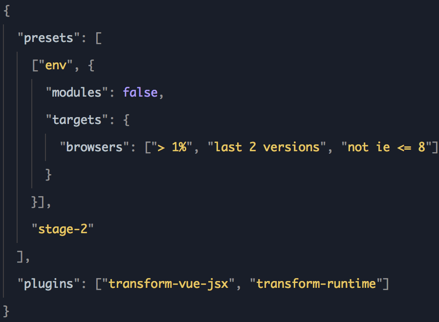
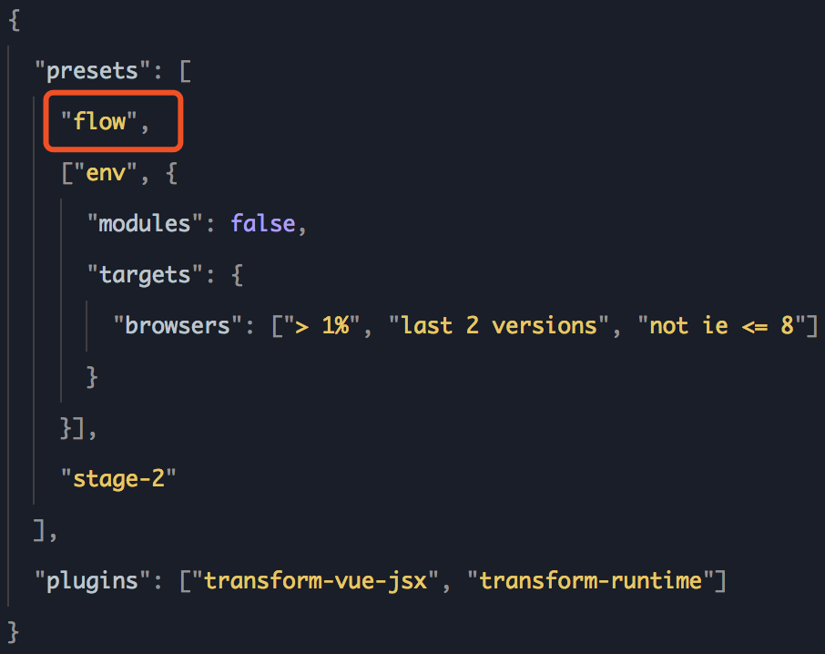

<!DOCTYPE HTML>
<html lang="" >
    <head>
        <meta charset="UTF-8">
        <meta content="text/html; charset=utf-8" http-equiv="Content-Type">
        <title>webpack 集成 chameleon · chameleon</title>
        <meta http-equiv="X-UA-Compatible" content="IE=edge" />
        <meta name="description" content="">
        <meta name="generator" content="GitBook 3.2.3">
        
        
        
    
    <link rel="stylesheet" href="../gitbook/style.css">

    
            
                
                <link rel="stylesheet" href="../gitbook/gitbook-plugin-anchors/plugin.css">
                
            
                
                <link rel="stylesheet" href="../gitbook/gitbook-plugin-alerts/style.css">
                
            
                
                <link rel="stylesheet" href="../gitbook/gitbook-plugin-expandable-chapters-small/expandable-chapters-small.css">
                
            
                
                <link rel="stylesheet" href="../gitbook/gitbook-plugin-highlight-code/website.css">
                
            
                
                <link rel="stylesheet" href="../gitbook/gitbook-plugin-splitter/splitter.css">
                
            
                
                <link rel="stylesheet" href="../gitbook/gitbook-plugin-code3/plugin.css">
                
            
                
                <link rel="stylesheet" href="../gitbook/gitbook-plugin-search-plus/search.css">
                
            
                
                <link rel="stylesheet" href="../gitbook/gitbook-plugin-anchor-navigation-ex/style/plugin.css">
                
            
                
                <link rel="stylesheet" href="../gitbook/gitbook-plugin-highlight/website.css">
                
            
                
                <link rel="stylesheet" href="../gitbook/gitbook-plugin-fontsettings/website.css">
                
            
        

    

    
        
        <link rel="stylesheet" href="../styles/website.css">
        
    

        
    
    
    
    <meta name="HandheldFriendly" content="true"/>
    <meta name="viewport" content="width=device-width, initial-scale=1, user-scalable=no">
    <meta name="apple-mobile-web-app-capable" content="yes">
    <meta name="apple-mobile-web-app-status-bar-style" content="black">
    <link rel="apple-touch-icon-precomposed" sizes="152x152" href="../gitbook/images/apple-touch-icon-precomposed-152.png">
    <link rel="shortcut icon" href="../gitbook/images/favicon.ico" type="image/x-icon">

    
    <link rel="next" href="android_example.html" />
    
    
    <link rel="prev" href="webpack_output.html" />
    

    
        <link rel="shortcut icon" href='../assets/favicon.ico' type="image/x-icon">
    
    
    
    

    </head>
    <body>
        


<div class="custom-loading-bg">
  <div class="custom-loading-wrap">
    <svg version="1.1" id="loader-1" xmlns="http://www.w3.org/2000/svg" xmlns:xlink="http://www.w3.org/1999/xlink" x="0px" y="0px" width="100px" height="100px" viewBox="0 0 50 50" style="enable-background:new 0 0 50 50;" xml:space="preserve">
    <path fill="#1D6EF0" d="M43.935,25.145c0-10.318-8.364-18.683-18.683-18.683c-10.318,0-18.683,8.365-18.683,18.683h4.068c0-8.071,6.543-14.615,14.615-14.615c8.072,0,14.615,6.543,14.615,14.615H43.935z" transform="rotate(188.365 25 25)">
      <animateTransform attributeType="xml" attributeName="transform" type="rotate" from="0 25 25" to="360 25 25" dur="0.6s" repeatCount="indefinite"></animateTransform>
      </path>
    </svg>
  </div>
</div>


<div class="book-nav">
  
    <a class="book-nav-brand" href="/">
      
        
      
    </a>
  
  
    <div class="book-nav-list">
      
        <a href="/doc/quick_start/quick_start.html" data-part="quick_start" class="book-nav-list-link">快速上手</a>
      
        <a href="/doc/framework/framework.html" data-part="framework" class="book-nav-list-link">框架</a>
      
        <a href="/doc/component/component.html" data-part="component" class="book-nav-list-link">组件</a>
      
        <a href="/doc/api/api.html" data-part="api" class="book-nav-list-link">API</a>
      
        <a href="/doc/extend/advanced_use.html" data-part="example" class="book-nav-list-link">高级使用</a>
      
        <a href="/doc/example/main.html" data-part="tutorial" class="book-nav-list-link">教程</a>
      
        <a href="/doc/framework/faq.html" data-part="faq" class="book-nav-list-link">FAQ</a>
      
        <a href="/doc/update_record.html" data-part="log" class="book-nav-list-link">更新记录</a>
      
    </div>
  
</div>


<div class="book">
    <div class="book-summary">
        
            
<div id="book-search-input" role="search">
    <input type="text" placeholder="Type to search" />
</div>

            
                <nav role="navigation">
                


<ul class="summary">
    
    

    

    
        
        
        
    
        <li class="chapter " data-level="1.1" data-path="../" data-part="quick_start">
            
                <a href="../">
            
                    
                    介绍
            
                </a>
            

            
        </li>
    
        <li class="chapter " data-level="1.2" data-path="../quick_start/quick_start.html" data-part="quick_start">
            
                <a href="../quick_start/quick_start.html">
            
                    
                    快速上手
            
                </a>
            

            
            <ul class="articles">
                
    
        <li class="chapter " data-level="1.2.1" data-path="guide.html" data-part="quick_start">
            
                <a href="guide.html">
            
                    
                    cml 迁移指南
            
                </a>
            

            
            <ul class="articles">
                
    
        <li class="chapter " data-level="1.2.1.1" data-path="wx_to_chameleon.html" data-part="quick_start">
            
                <a href="wx_to_chameleon.html">
            
                    
                    微信小程序项目迁移 chameleon 指引
            
                </a>
            

            
        </li>
    
        <li class="chapter " data-level="1.2.1.2" data-path="web_to_chameleon.html" data-part="quick_start">
            
                <a href="web_to_chameleon.html">
            
                    
                    web 项目迁移 chameleon 指引
            
                </a>
            

            
        </li>
    
        <li class="chapter " data-level="1.2.1.3" data-path="weex_to_chameleon.html" data-part="quick_start">
            
                <a href="weex_to_chameleon.html">
            
                    
                    weex 项目迁移 chameleon 指引
            
                </a>
            

            
        </li>
    

            </ul>
            
        </li>
    

            </ul>
            
        </li>
    

    
        
        
        
    
        <li class="chapter " data-level="2.1" data-path="../framework/framework.html" data-part="framework">
            
                <a href="../framework/framework.html">
            
                    
                    框架
            
                </a>
            

            
            <ul class="articles">
                
    
        <li class="chapter " data-level="2.1.1" data-path="../quick_start/cml_cmd.html" data-part="framework">
            
                <a href="../quick_start/cml_cmd.html">
            
                    
                    脚手架工具
            
                </a>
            

            
        </li>
    
        <li class="chapter " data-level="2.1.2" data-path="../framework/structure.html" data-part="framework">
            
                <a href="../framework/structure.html">
            
                    
                    目录结构
            
                </a>
            

            
        </li>
    
        <li class="chapter " data-level="2.1.3" data-path="../view/view.html" data-part="framework">
            
                <a href="../view/view.html">
            
                    
                    视图层
            
                </a>
            

            
            <ul class="articles">
                
    
        <li class="chapter " data-level="2.1.3.1" data-path="../view/cmss.html" data-part="framework">
            
                <a href="../view/cmss.html">
            
                    
                    CMSS
            
                </a>
            

            
            <ul class="articles">
                
    
        <li class="chapter " data-level="2.1.3.1.1" data-path="../view/cmss/style_way.html" data-part="framework">
            
                <a href="../view/cmss/style_way.html">
            
                    
                    样式使用
            
                </a>
            

            
        </li>
    
        <li class="chapter " data-level="2.1.3.1.2" data-path="../view/cmss/layout.html" data-part="framework">
            
                <a href="../view/cmss/layout.html">
            
                    
                    布局
            
                </a>
            

            
        </li>
    
        <li class="chapter " data-level="2.1.3.1.3" data-path="../view/cmss/box.html" data-part="framework">
            
                <a href="../view/cmss/box.html">
            
                    
                    盒模型
            
                </a>
            

            
        </li>
    
        <li class="chapter " data-level="2.1.3.1.4" data-path="../view/cmss/text.html" data-part="framework">
            
                <a href="../view/cmss/text.html">
            
                    
                    文本
            
                </a>
            

            
        </li>
    
        <li class="chapter " data-level="2.1.3.1.5" data-path="../view/cmss/unit.html" data-part="framework">
            
                <a href="../view/cmss/unit.html">
            
                    
                    单位
            
                </a>
            

            
        </li>
    
        <li class="chapter " data-level="2.1.3.1.6" data-path="../view/cmss/color.html" data-part="framework">
            
                <a href="../view/cmss/color.html">
            
                    
                    颜色
            
                </a>
            

            
        </li>
    
        <li class="chapter " data-level="2.1.3.1.7" data-path="../view/cmss/css_diff.html" data-part="framework">
            
                <a href="../view/cmss/css_diff.html">
            
                    
                    样式多态
            
                </a>
            

            
        </li>
    
        <li class="chapter " data-level="2.1.3.1.8" data-path="../view/cmss/base_style.html" data-part="framework">
            
                <a href="../view/cmss/base_style.html">
            
                    
                    一致性基础样式
            
                </a>
            

            
        </li>
    
        <li class="chapter " data-level="2.1.3.1.9" data-path="web_wx.html" data-part="framework">
            
                <a href="web_wx.html">
            
                    
                    只跨 web 和小程序的应用
            
                </a>
            

            
        </li>
    

            </ul>
            
        </li>
    
        <li class="chapter " data-level="2.1.3.2" data-path="../view/cml.html" data-part="framework">
            
                <a href="../view/cml.html">
            
                    
                    CML-标准语法
            
                </a>
            

            
            <ul class="articles">
                
    
        <li class="chapter " data-level="2.1.3.2.1" data-path="../view/databind.html" data-part="framework">
            
                <a href="../view/databind.html">
            
                    
                    数据绑定
            
                </a>
            

            
        </li>
    
        <li class="chapter " data-level="2.1.3.2.2" data-path="../view/condition.html" data-part="framework">
            
                <a href="../view/condition.html">
            
                    
                    条件渲染
            
                </a>
            

            
        </li>
    
        <li class="chapter " data-level="2.1.3.2.3" data-path="../view/iterator.html" data-part="framework">
            
                <a href="../view/iterator.html">
            
                    
                    列表渲染
            
                </a>
            

            
        </li>
    
        <li class="chapter " data-level="2.1.3.2.4" data-path="../view/event.html" data-part="framework">
            
                <a href="../view/event.html">
            
                    
                    事件
            
                </a>
            

            
        </li>
    
        <li class="chapter " data-level="2.1.3.2.5" data-path="../view/component.html" data-part="framework">
            
                <a href="../view/component.html">
            
                    
                    动态组件
            
                </a>
            

            
        </li>
    
        <li class="chapter " data-level="2.1.3.2.6" data-path="../view/directive.html" data-part="framework">
            
                <a href="../view/directive.html">
            
                    
                    指令
            
                </a>
            

            
        </li>
    

            </ul>
            
        </li>
    
        <li class="chapter " data-level="2.1.3.3" data-path="../view/vue.html" data-part="framework">
            
                <a href="../view/vue.html">
            
                    
                    CML-类 vue 语法
            
                </a>
            

            
            <ul class="articles">
                
    
        <li class="chapter " data-level="2.1.3.3.1" data-path="../view/databind-vue.html" data-part="framework">
            
                <a href="../view/databind-vue.html">
            
                    
                    数据绑定
            
                </a>
            

            
        </li>
    
        <li class="chapter " data-level="2.1.3.3.2" data-path="../view/condition-vue.html" data-part="framework">
            
                <a href="../view/condition-vue.html">
            
                    
                    条件渲染
            
                </a>
            

            
        </li>
    
        <li class="chapter " data-level="2.1.3.3.3" data-path="../view/iterator-vue.html" data-part="framework">
            
                <a href="../view/iterator-vue.html">
            
                    
                    列表渲染
            
                </a>
            

            
        </li>
    
        <li class="chapter " data-level="2.1.3.3.4" data-path="../view/event-vue.html" data-part="framework">
            
                <a href="../view/event-vue.html">
            
                    
                    事件
            
                </a>
            

            
        </li>
    
        <li class="chapter " data-level="2.1.3.3.5" data-path="../view/component-vue.html" data-part="framework">
            
                <a href="../view/component-vue.html">
            
                    
                    动态组件
            
                </a>
            

            
        </li>
    
        <li class="chapter " data-level="2.1.3.3.6" data-path="../view/directive-vue.html" data-part="framework">
            
                <a href="../view/directive-vue.html">
            
                    
                    指令
            
                </a>
            

            
        </li>
    
        <li class="chapter " data-level="2.1.3.3.7" data-path="../view/css-vue.html" data-part="framework">
            
                <a href="../view/css-vue.html">
            
                    
                    样式语法规范
            
                </a>
            

            
        </li>
    

            </ul>
            
        </li>
    
        <li class="chapter " data-level="2.1.3.4" data-path="../view/base_component.html" data-part="framework">
            
                <a href="../view/base_component.html">
            
                    
                    基础组件
            
                </a>
            

            
        </li>
    

            </ul>
            
        </li>
    
        <li class="chapter " data-level="2.1.4" data-path="../logic/logic.html" data-part="framework">
            
                <a href="../logic/logic.html">
            
                    
                    逻辑层
            
                </a>
            

            
            <ul class="articles">
                
    
        <li class="chapter " data-level="2.1.4.1" data-path="../logic/data_bind.html" data-part="framework">
            
                <a href="../logic/data_bind.html">
            
                    
                    响应式数据绑定系统
            
                </a>
            

            
        </li>
    
        <li class="chapter " data-level="2.1.4.2" data-path="../logic/lifecycle.html" data-part="framework">
            
                <a href="../logic/lifecycle.html">
            
                    
                    生命周期
            
                </a>
            

            
        </li>
    
        <li class="chapter " data-level="2.1.4.3" data-path="../logic/computed.html" data-part="framework">
            
                <a href="../logic/computed.html">
            
                    
                    计算属性 computed
            
                </a>
            

            
        </li>
    
        <li class="chapter " data-level="2.1.4.4" data-path="../logic/watch.html" data-part="framework">
            
                <a href="../logic/watch.html">
            
                    
                    侦听属性 watch
            
                </a>
            

            
        </li>
    
        <li class="chapter " data-level="2.1.4.5" data-path="../logic/API.html" data-part="framework">
            
                <a href="../logic/API.html">
            
                    
                    API
            
                </a>
            

            
        </li>
    
        <li class="chapter " data-level="2.1.4.6" data-path="../logic/store.html" data-part="framework">
            
                <a href="../logic/store.html">
            
                    
                    数据管理
            
                </a>
            

            
            <ul class="articles">
                
    
        <li class="chapter " data-level="2.1.4.6.1" data-path="../logic/store/start.html" data-part="framework">
            
                <a href="../logic/store/start.html">
            
                    
                    开始
            
                </a>
            

            
        </li>
    
        <li class="chapter " data-level="2.1.4.6.2" data-path="../logic/store/state.html" data-part="framework">
            
                <a href="../logic/store/state.html">
            
                    
                    state
            
                </a>
            

            
        </li>
    
        <li class="chapter " data-level="2.1.4.6.3" data-path="../logic/store/getters.html" data-part="framework">
            
                <a href="../logic/store/getters.html">
            
                    
                    getters
            
                </a>
            

            
        </li>
    
        <li class="chapter " data-level="2.1.4.6.4" data-path="../logic/store/mutation.html" data-part="framework">
            
                <a href="../logic/store/mutation.html">
            
                    
                    mutation
            
                </a>
            

            
        </li>
    
        <li class="chapter " data-level="2.1.4.6.5" data-path="../logic/store/action.html" data-part="framework">
            
                <a href="../logic/store/action.html">
            
                    
                    action
            
                </a>
            

            
        </li>
    
        <li class="chapter " data-level="2.1.4.6.6" data-path="../logic/store/module.html" data-part="framework">
            
                <a href="../logic/store/module.html">
            
                    
                    子模块
            
                </a>
            

            
        </li>
    
        <li class="chapter " data-level="2.1.4.6.7" data-path="../logic/store/structure.html" data-part="framework">
            
                <a href="../logic/store/structure.html">
            
                    
                    目录结构
            
                </a>
            

            
        </li>
    

            </ul>
            
        </li>
    

            </ul>
            
        </li>
    
        <li class="chapter " data-level="2.1.5" data-path="../framework/custom-component/custom-component.html" data-part="framework">
            
                <a href="../framework/custom-component/custom-component.html">
            
                    
                    自定义组件
            
                </a>
            

            
            <ul class="articles">
                
    
        <li class="chapter " data-level="2.1.5.1" data-path="../framework/custom-component/cml-cmss.html" data-part="framework">
            
                <a href="../framework/custom-component/cml-cmss.html">
            
                    
                    组件模板和样式
            
                </a>
            

            
        </li>
    
        <li class="chapter " data-level="2.1.5.2" data-path="../framework/custom-component/comp-vm.html" data-part="framework">
            
                <a href="../framework/custom-component/comp-vm.html">
            
                    
                    组件 VM
            
                </a>
            

            
        </li>
    

            </ul>
            
        </li>
    
        <li class="chapter " data-level="2.1.6" data-path="../framework/settings.html" data-part="framework">
            
                <a href="../framework/settings.html">
            
                    
                    配置
            
                </a>
            

            
            <ul class="articles">
                
    
        <li class="chapter " data-level="2.1.6.1" data-path="../framework/json.html" data-part="framework">
            
                <a href="../framework/json.html">
            
                    
                    组件配置
            
                </a>
            

            
        </li>
    
        <li class="chapter " data-level="2.1.6.2" data-path="../framework/router.html" data-part="framework">
            
                <a href="../framework/router.html">
            
                    
                    路由配置
            
                </a>
            

            
        </li>
    
        <li class="chapter " data-level="2.1.6.3" data-path="../framework/config.html" data-part="framework">
            
                <a href="../framework/config.html">
            
                    
                    工程配置
            
                </a>
            

            
        </li>
    

            </ul>
            
        </li>
    

            </ul>
            
        </li>
    

    
        
        
        
    
        <li class="chapter " data-level="3.1" data-path="../component/component.html" data-part="component">
            
                <a href="../component/component.html">
            
                    
                    组件
            
                </a>
            

            
            <ul class="articles">
                
    
        <li class="chapter " data-level="3.1.1" data-path="../component/base/base.html" data-part="component">
            
                <a href="../component/base/base.html">
            
                    
                    内置组件
            
                </a>
            

            
            <ul class="articles">
                
    
        <li class="chapter " data-level="3.1.1.1" data-path="../component/base/content/view.html" data-part="component">
            
                <a href="../component/base/content/view.html">
            
                    
                    基础内容
            
                </a>
            

            
            <ul class="articles">
                
    
        <li class="chapter " data-level="3.1.1.1.1" data-path="../component/base/content/view.html" data-part="component">
            
                <a href="../component/base/content/view.html">
            
                    
                    view
            
                </a>
            

            
        </li>
    
        <li class="chapter " data-level="3.1.1.1.2" data-path="../component/base/content/cover-view.html" data-part="component">
            
                <a href="../component/base/content/cover-view.html">
            
                    
                    cover-view
            
                </a>
            

            
        </li>
    
        <li class="chapter " data-level="3.1.1.1.3" data-path="../component/base/content/text.html" data-part="component">
            
                <a href="../component/base/content/text.html">
            
                    
                    text
            
                </a>
            

            
        </li>
    
        <li class="chapter " data-level="3.1.1.1.4" data-path="../component/base/content/page.html" data-part="component">
            
                <a href="../component/base/content/page.html">
            
                    
                    page
            
                </a>
            

            
        </li>
    
        <li class="chapter " data-level="3.1.1.1.5" data-path="../component/base/content/block.html" data-part="component">
            
                <a href="../component/base/content/block.html">
            
                    
                    block
            
                </a>
            

            
        </li>
    
        <li class="chapter " data-level="3.1.1.1.6" data-path="../component/base/content/cell.html" data-part="component">
            
                <a href="../component/base/content/cell.html">
            
                    
                    cell
            
                </a>
            

            
        </li>
    

            </ul>
            
        </li>
    
        <li class="chapter " data-level="3.1.1.2" data-path="../component/base/layout/scroller.html" data-part="component">
            
                <a href="../component/base/layout/scroller.html">
            
                    
                    布局容器
            
                </a>
            

            
            <ul class="articles">
                
    
        <li class="chapter " data-level="3.1.1.2.1" data-path="../component/base/layout/scroller.html" data-part="component">
            
                <a href="../component/base/layout/scroller.html">
            
                    
                    scroller
            
                </a>
            

            
        </li>
    
        <li class="chapter " data-level="3.1.1.2.2" data-path="../component/base/layout/list.html" data-part="component">
            
                <a href="../component/base/layout/list.html">
            
                    
                    list
            
                </a>
            

            
        </li>
    
        <li class="chapter " data-level="3.1.1.2.3" data-path="../component/base/layout/container.html" data-part="component">
            
                <a href="../component/base/layout/container.html">
            
                    
                    container
            
                </a>
            

            
        </li>
    
        <li class="chapter " data-level="3.1.1.2.4" data-path="../component/base/layout/row.html" data-part="component">
            
                <a href="../component/base/layout/row.html">
            
                    
                    row
            
                </a>
            

            
        </li>
    
        <li class="chapter " data-level="3.1.1.2.5" data-path="../component/base/layout/col.html" data-part="component">
            
                <a href="../component/base/layout/col.html">
            
                    
                    col
            
                </a>
            

            
        </li>
    
        <li class="chapter " data-level="3.1.1.2.6" data-path="../component/base/layout/carousel.html" data-part="component">
            
                <a href="../component/base/layout/carousel.html">
            
                    
                    carousel
            
                </a>
            

            
        </li>
    
        <li class="chapter " data-level="3.1.1.2.7" data-path="../component/base/layout/carousel-item.html" data-part="component">
            
                <a href="../component/base/layout/carousel-item.html">
            
                    
                    carousel-item
            
                </a>
            

            
        </li>
    

            </ul>
            
        </li>
    
        <li class="chapter " data-level="3.1.1.3" data-path="../component/base/form/button.html" data-part="component">
            
                <a href="../component/base/form/button.html">
            
                    
                    表单组件
            
                </a>
            

            
            <ul class="articles">
                
    
        <li class="chapter " data-level="3.1.1.3.1" data-path="../component/base/form/button.html" data-part="component">
            
                <a href="../component/base/form/button.html">
            
                    
                    button
            
                </a>
            

            
        </li>
    
        <li class="chapter " data-level="3.1.1.3.2" data-path="../component/base/form/input.html" data-part="component">
            
                <a href="../component/base/form/input.html">
            
                    
                    input
            
                </a>
            

            
        </li>
    
        <li class="chapter " data-level="3.1.1.3.3" data-path="../component/base/form/textarea.html" data-part="component">
            
                <a href="../component/base/form/textarea.html">
            
                    
                    textarea
            
                </a>
            

            
        </li>
    
        <li class="chapter " data-level="3.1.1.3.4" data-path="../component/base/form/switch.html" data-part="component">
            
                <a href="../component/base/form/switch.html">
            
                    
                    switch
            
                </a>
            

            
        </li>
    
        <li class="chapter " data-level="3.1.1.3.5" data-path="../component/base/form/radio.html" data-part="component">
            
                <a href="../component/base/form/radio.html">
            
                    
                    radio
            
                </a>
            

            
        </li>
    
        <li class="chapter " data-level="3.1.1.3.6" data-path="../component/base/form/checkbox.html" data-part="component">
            
                <a href="../component/base/form/checkbox.html">
            
                    
                    checkbox
            
                </a>
            

            
        </li>
    

            </ul>
            
        </li>
    
        <li class="chapter " data-level="3.1.1.4" data-path="../component/base/media/image.html" data-part="component">
            
                <a href="../component/base/media/image.html">
            
                    
                    媒体组件
            
                </a>
            

            
            <ul class="articles">
                
    
        <li class="chapter " data-level="3.1.1.4.1" data-path="../component/base/media/image.html" data-part="component">
            
                <a href="../component/base/media/image.html">
            
                    
                    image
            
                </a>
            

            
        </li>
    
        <li class="chapter " data-level="3.1.1.4.2" data-path="../component/base/media/video.html" data-part="component">
            
                <a href="../component/base/media/video.html">
            
                    
                    video
            
                </a>
            

            
        </li>
    

            </ul>
            
        </li>
    

            </ul>
            
        </li>
    
        <li class="chapter " data-level="3.1.2" data-path="../component/expand/expand.html" data-part="component">
            
                <a href="../component/expand/expand.html">
            
                    
                    扩展组件
            
                </a>
            

            
            <ul class="articles">
                
    
        <li class="chapter " data-level="3.1.2.1" data-path="../component/expand/compound/c-toast.html" data-part="component">
            
                <a href="../component/expand/compound/c-toast.html">
            
                    
                    c-toast
            
                </a>
            

            
        </li>
    
        <li class="chapter " data-level="3.1.2.2" data-path="../component/expand/compound/c-loading.html" data-part="component">
            
                <a href="../component/expand/compound/c-loading.html">
            
                    
                    c-loading
            
                </a>
            

            
        </li>
    
        <li class="chapter " data-level="3.1.2.3" data-path="../component/expand/compound/c-dialog.html" data-part="component">
            
                <a href="../component/expand/compound/c-dialog.html">
            
                    
                    c-dialog
            
                </a>
            

            
        </li>
    
        <li class="chapter " data-level="3.1.2.4" data-path="../component/expand/compound/c-popup.html" data-part="component">
            
                <a href="../component/expand/compound/c-popup.html">
            
                    
                    c-popup
            
                </a>
            

            
        </li>
    
        <li class="chapter " data-level="3.1.2.5" data-path="../component/expand/compound/c-tip.html" data-part="component">
            
                <a href="../component/expand/compound/c-tip.html">
            
                    
                    c-tip
            
                </a>
            

            
        </li>
    
        <li class="chapter " data-level="3.1.2.6" data-path="../component/expand/compound/c-actionsheet.html" data-part="component">
            
                <a href="../component/expand/compound/c-actionsheet.html">
            
                    
                    c-actionsheet
            
                </a>
            

            
        </li>
    
        <li class="chapter " data-level="3.1.2.7" data-path="../component/expand/compound/c-tab.html" data-part="component">
            
                <a href="../component/expand/compound/c-tab.html">
            
                    
                    c-tab
            
                </a>
            

            
        </li>
    
        <li class="chapter " data-level="3.1.2.8" data-path="../component/expand/compound/c-picker.html" data-part="component">
            
                <a href="../component/expand/compound/c-picker.html">
            
                    
                    c-picker
            
                </a>
            

            
        </li>
    
        <li class="chapter " data-level="3.1.2.9" data-path="../component/expand/polymorphism/c-picker-panel.html" data-part="component">
            
                <a href="../component/expand/polymorphism/c-picker-panel.html">
            
                    
                    c-picker-panel
            
                </a>
            

            
        </li>
    
        <li class="chapter " data-level="3.1.2.10" data-path="../component/expand/polymorphism/c-picker-item.html" data-part="component">
            
                <a href="../component/expand/polymorphism/c-picker-item.html">
            
                    
                    c-picker-item
            
                </a>
            

            
        </li>
    
        <li class="chapter " data-level="3.1.2.11" data-path="../component/expand/compound/c-checkbox-group.html" data-part="component">
            
                <a href="../component/expand/compound/c-checkbox-group.html">
            
                    
                    c-checkbox-group
            
                </a>
            

            
        </li>
    
        <li class="chapter " data-level="3.1.2.12" data-path="../component/expand/compound/c-radio-group.html" data-part="component">
            
                <a href="../component/expand/compound/c-radio-group.html">
            
                    
                    c-radio-group
            
                </a>
            

            
        </li>
    
        <li class="chapter " data-level="3.1.2.13" data-path="../component/expand/compound/c-tabbar.html" data-part="component">
            
                <a href="../component/expand/compound/c-tabbar.html">
            
                    
                    c-tabbar
            
                </a>
            

            
        </li>
    

            </ul>
            
        </li>
    

            </ul>
            
        </li>
    

    
        
        
        
    
        <li class="chapter " data-level="4.1" data-path="../api/api.html" data-part="api">
            
                <a href="../api/api.html">
            
                    
                    API
            
                </a>
            

            
            <ul class="articles">
                
    
        <li class="chapter " data-level="4.1.1" data-path="../api/runtime/runtime.html" data-part="api">
            
                <a href="../api/runtime/runtime.html">
            
                    
                    运行时相关
            
                </a>
            

            
            <ul class="articles">
                
    
        <li class="chapter " data-level="4.1.1.1" data-path="../api/runtime/module.html" data-part="api">
            
                <a href="../api/runtime/module.html">
            
                    
                    export&import
            
                </a>
            

            
        </li>
    
        <li class="chapter " data-level="4.1.1.2" data-path="../api/runtime/@import.html" data-part="api">
            
                <a href="../api/runtime/@import.html">
            
                    
                    @import
            
                </a>
            

            
        </li>
    

            </ul>
            
        </li>
    
        <li class="chapter " data-level="4.1.2" data-path="../api/request.html" data-part="api">
            
                <a href="../api/request.html">
            
                    
                    网络请求
            
                </a>
            

            
            <ul class="articles">
                
    
        <li class="chapter " data-level="4.1.2.1" data-path="../api/request.html" data-part="api">
            
                <a href="../api/request.html#get">
            
                    
                    cml.get
            
                </a>
            

            
        </li>
    
        <li class="chapter " data-level="4.1.2.2" data-path="../api/request.html" data-part="api">
            
                <a href="../api/request.html#post">
            
                    
                    cml.post
            
                </a>
            

            
        </li>
    
        <li class="chapter " data-level="4.1.2.3" data-path="../api/request.html" data-part="api">
            
                <a href="../api/request.html#request">
            
                    
                    cml.request
            
                </a>
            

            
        </li>
    

            </ul>
            
        </li>
    
        <li class="chapter " data-level="4.1.3" data-path="../api/navigate.html" data-part="api">
            
                <a href="../api/navigate.html">
            
                    
                    路由导航
            
                </a>
            

            
            <ul class="articles">
                
    
        <li class="chapter " data-level="4.1.3.1" data-path="../api/navigate.html" data-part="api">
            
                <a href="../api/navigate.html#navigateto">
            
                    
                    cml.navigateTo
            
                </a>
            

            
        </li>
    
        <li class="chapter " data-level="4.1.3.2" data-path="../api/navigate.html" data-part="api">
            
                <a href="../api/navigate.html#redirectto">
            
                    
                    cml.redirectTo
            
                </a>
            

            
        </li>
    
        <li class="chapter " data-level="4.1.3.3" data-path="../api/navigate.html" data-part="api">
            
                <a href="../api/navigate.html#navigateback">
            
                    
                    cml.navigateBack
            
                </a>
            

            
        </li>
    

            </ul>
            
        </li>
    
        <li class="chapter " data-level="4.1.4" data-path="../api/storage.html" data-part="api">
            
                <a href="../api/storage.html">
            
                    
                    数据存储
            
                </a>
            

            
            <ul class="articles">
                
    
        <li class="chapter " data-level="4.1.4.1" data-path="../api/storage.html" data-part="api">
            
                <a href="../api/storage.html#setstorage">
            
                    
                    cml.setStorage
            
                </a>
            

            
        </li>
    
        <li class="chapter " data-level="4.1.4.2" data-path="../api/storage.html" data-part="api">
            
                <a href="../api/storage.html#getstorage">
            
                    
                    cml.getStorage
            
                </a>
            

            
        </li>
    
        <li class="chapter " data-level="4.1.4.3" data-path="../api/storage.html" data-part="api">
            
                <a href="../api/storage.html#removestorage">
            
                    
                    cml.removeStorage
            
                </a>
            

            
        </li>
    

            </ul>
            
        </li>
    
        <li class="chapter " data-level="4.1.5" data-path="../api/location.html" data-part="api">
            
                <a href="../api/location.html">
            
                    
                    地理位置
            
                </a>
            

            
            <ul class="articles">
                
    
        <li class="chapter " data-level="4.1.5.1" data-path="../api/location.html" data-part="api">
            
                <a href="../api/location.html#getlocationinfo">
            
                    
                    cml.getLocationInfo
            
                </a>
            

            
        </li>
    

            </ul>
            
        </li>
    
        <li class="chapter " data-level="4.1.6" data-path="../api/system.html" data-part="api">
            
                <a href="../api/system.html">
            
                    
                    系统信息
            
                </a>
            

            
            <ul class="articles">
                
    
        <li class="chapter " data-level="4.1.6.1" data-path="../api/system.html" data-part="api">
            
                <a href="../api/system.html#getsysteminfo">
            
                    
                    cml.getSystemInfo
            
                </a>
            

            
        </li>
    

            </ul>
            
        </li>
    
        <li class="chapter " data-level="4.1.7" data-path="../api/launchOptions.html" data-part="api">
            
                <a href="../api/launchOptions.html">
            
                    
                    启动参数
            
                </a>
            

            
            <ul class="articles">
                
    
        <li class="chapter " data-level="4.1.7.1" data-path="../api/launchOptions.html" data-part="api">
            
                <a href="../api/launchOptions.html#getlaunchoptionssync">
            
                    
                    cml.getLaunchOptionsSync
            
                </a>
            

            
        </li>
    

            </ul>
            
        </li>
    
        <li class="chapter " data-level="4.1.8" data-path="../api/getRect.html" data-part="api">
            
                <a href="../api/getRect.html">
            
                    
                    元素属性
            
                </a>
            

            
            <ul class="articles">
                
    
        <li class="chapter " data-level="4.1.8.1" data-path="../api/getRect.html" data-part="api">
            
                <a href="../api/getRect.html#getrect">
            
                    
                    cml.getRect
            
                </a>
            

            
        </li>
    

            </ul>
            
        </li>
    
        <li class="chapter " data-level="4.1.9" data-path="../api/px.html" data-part="api">
            
                <a href="../api/px.html">
            
                    
                    单位转换
            
                </a>
            

            
            <ul class="articles">
                
    
        <li class="chapter " data-level="4.1.9.1" data-path="../api/px.html" data-part="api">
            
                <a href="../api/px.html#px2cpx">
            
                    
                    cml.px2cpx
            
                </a>
            

            
        </li>
    
        <li class="chapter " data-level="4.1.9.2" data-path="../api/px.html" data-part="api">
            
                <a href="../api/px.html#cpx2px">
            
                    
                    cml.cpx2px
            
                </a>
            

            
        </li>
    

            </ul>
            
        </li>
    
        <li class="chapter " data-level="4.1.10" data-path="../api/modal.html" data-part="api">
            
                <a href="../api/modal.html">
            
                    
                    交互反馈
            
                </a>
            

            
            <ul class="articles">
                
    
        <li class="chapter " data-level="4.1.10.1" data-path="../api/modal.html" data-part="api">
            
                <a href="../api/modal.html#showtoast">
            
                    
                    cml.showToast
            
                </a>
            

            
        </li>
    
        <li class="chapter " data-level="4.1.10.2" data-path="../api/modal.html" data-part="api">
            
                <a href="../api/modal.html#alert">
            
                    
                    cml.alert
            
                </a>
            

            
        </li>
    
        <li class="chapter " data-level="4.1.10.3" data-path="../api/modal.html" data-part="api">
            
                <a href="../api/modal.html#confirm">
            
                    
                    cml.confirm
            
                </a>
            

            
        </li>
    

            </ul>
            
        </li>
    
        <li class="chapter " data-level="4.1.11" data-path="../api/title.html" data-part="api">
            
                <a href="../api/title.html">
            
                    
                    设置 title
            
                </a>
            

            
            <ul class="articles">
                
    
        <li class="chapter " data-level="4.1.11.1" data-path="../api/title.html" data-part="api">
            
                <a href="../api/title.html#settitle">
            
                    
                    cml.setTitle
            
                </a>
            

            
        </li>
    

            </ul>
            
        </li>
    
        <li class="chapter " data-level="4.1.12" data-path="../api/open.html" data-part="api">
            
                <a href="../api/open.html">
            
                    
                    打开/关闭应用页面
            
                </a>
            

            
            <ul class="articles">
                
    
        <li class="chapter " data-level="4.1.12.1" data-path="../api/open.html" data-part="api">
            
                <a href="../api/open.html#open">
            
                    
                    cml.open
            
                </a>
            

            
        </li>
    
        <li class="chapter " data-level="4.1.12.2" data-path="../api/open.html" data-part="api">
            
                <a href="../api/open.html#close">
            
                    
                    cml.close
            
                </a>
            

            
        </li>
    

            </ul>
            
        </li>
    
        <li class="chapter " data-level="4.1.13" data-path="../api/chooseImage.html" data-part="api">
            
                <a href="../api/chooseImage.html">
            
                    
                    获取照片
            
                </a>
            

            
            <ul class="articles">
                
    
        <li class="chapter " data-level="4.1.13.1" data-path="../api/chooseImage.html" data-part="api">
            
                <a href="../api/chooseImage.html#chooseimage">
            
                    
                    cml.chooseImage
            
                </a>
            

            
        </li>
    

            </ul>
            
        </li>
    
        <li class="chapter " data-level="4.1.14" data-path="../api/clipBoard.html" data-part="api">
            
                <a href="../api/clipBoard.html">
            
                    
                    剪贴板
            
                </a>
            

            
            <ul class="articles">
                
    
        <li class="chapter " data-level="4.1.14.1" data-path="../api/clipBoard.html" data-part="api">
            
                <a href="../api/clipBoard.html#setclipboarddata">
            
                    
                    cml.setClipBoardData
            
                </a>
            

            
        </li>
    
        <li class="chapter " data-level="4.1.14.2" data-path="../api/clipBoard.html" data-part="api">
            
                <a href="../api/clipBoard.html#getclipboarddata">
            
                    
                    cml.getClipBoardData
            
                </a>
            

            
        </li>
    

            </ul>
            
        </li>
    
        <li class="chapter " data-level="4.1.15" data-path="../api/socket.html" data-part="api">
            
                <a href="../api/socket.html">
            
                    
                    WebSocket
            
                </a>
            

            
            <ul class="articles">
                
    
        <li class="chapter " data-level="4.1.15.1" data-path="../api/socket.html" data-part="api">
            
                <a href="../api/socket.html#initsocket">
            
                    
                    cml.initSocket
            
                </a>
            

            
        </li>
    

            </ul>
            
        </li>
    
        <li class="chapter " data-level="4.1.16" data-path="../api/timer.html" data-part="api">
            
                <a href="../api/timer.html">
            
                    
                    计时器
            
                </a>
            

            
            <ul class="articles">
                
    
        <li class="chapter " data-level="4.1.16.1" data-path="../api/timer.html" data-part="api">
            
                <a href="../api/timer.html#settimeout">
            
                    
                    setTimeout
            
                </a>
            

            
        </li>
    
        <li class="chapter " data-level="4.1.16.2" data-path="../api/timer.html" data-part="api">
            
                <a href="../api/timer.html#cleartimeout">
            
                    
                    clearTimeout
            
                </a>
            

            
        </li>
    
        <li class="chapter " data-level="4.1.16.3" data-path="../api/timer.html" data-part="api">
            
                <a href="../api/timer.html#setinterval">
            
                    
                    setInterval
            
                </a>
            

            
        </li>
    
        <li class="chapter " data-level="4.1.16.4" data-path="../api/timer.html" data-part="api">
            
                <a href="../api/timer.html#clearinterval">
            
                    
                    clearInterval
            
                </a>
            

            
        </li>
    

            </ul>
            
        </li>
    
        <li class="chapter " data-level="4.1.17" data-path="../api/caniuse.html" data-part="api">
            
                <a href="../api/caniuse.html">
            
                    
                    canIUse
            
                </a>
            

            
        </li>
    
        <li class="chapter " data-level="4.1.18" data-path="../api/async.html" data-part="api">
            
                <a href="../api/async.html">
            
                    
                    异步流程控制
            
                </a>
            

            
            <ul class="articles">
                
    
        <li class="chapter " data-level="4.1.18.1" data-path="../api/async.html" data-part="api">
            
                <a href="../api/async.html">
            
                    
                    Promise
            
                </a>
            

            
        </li>
    
        <li class="chapter " data-level="4.1.18.2" data-path="../api/async.html" data-part="api">
            
                <a href="../api/async.html#async，await">
            
                    
                    async，await
            
                </a>
            

            
        </li>
    

            </ul>
            
        </li>
    
        <li class="chapter " data-level="4.1.19" data-path="../api/error_control.html" data-part="api">
            
                <a href="../api/error_control.html">
            
                    
                    异常和错误处理
            
                </a>
            

            
            <ul class="articles">
                
    
        <li class="chapter " data-level="4.1.19.1" data-path="../api/error_control.html" data-part="api">
            
                <a href="../api/error_control.html#promise.then(">
            
                    
                    promise.then().catch
            
                </a>
            

            
        </li>
    
        <li class="chapter " data-level="4.1.19.2" data-path="../api/error_control.html" data-part="api">
            
                <a href="../api/error_control.html#try">
            
                    
                    try catch
            
                </a>
            

            
        </li>
    

            </ul>
            
        </li>
    
        <li class="chapter " data-level="4.1.20" data-path="../api/animationFrame.html" data-part="api">
            
                <a href="../api/animationFrame.html">
            
                    
                    动画关键帧
            
                </a>
            

            
            <ul class="articles">
                
    
        <li class="chapter " data-level="4.1.20.1" data-path="../api/animationFrame.html" data-part="api">
            
                <a href="../api/animationFrame.html#requestanimationframe">
            
                    
                    requestAnimationFrame
            
                </a>
            

            
        </li>
    
        <li class="chapter " data-level="4.1.20.2" data-path="../api/animationFrame.html" data-part="api">
            
                <a href="../api/animationFrame.html#cancelanimationframe">
            
                    
                    cancelAnimationFrame
            
                </a>
            

            
        </li>
    

            </ul>
            
        </li>
    
        <li class="chapter " data-level="4.1.21" data-path="../api/createAnimation/main.html" data-part="api">
            
                <a href="../api/createAnimation/main.html">
            
                    
                    动画
            
                </a>
            

            
            <ul class="articles">
                
    
        <li class="chapter " data-level="4.1.21.1" data-path="../api/createAnimation/createAnimation.html" data-part="api">
            
                <a href="../api/createAnimation/createAnimation.html">
            
                    
                    cml.createAnimation
            
                </a>
            

            
        </li>
    
        <li class="chapter " data-level="4.1.21.2" data-path="../api/createAnimation/animation/main.html" data-part="api">
            
                <a href="../api/createAnimation/animation/main.html">
            
                    
                    Animation
            
                </a>
            

            
            <ul class="articles">
                
    
        <li class="chapter " data-level="4.1.21.2.1" data-path="../api/createAnimation/animation/step.html" data-part="api">
            
                <a href="../api/createAnimation/animation/step.html">
            
                    
                    .step
            
                </a>
            

            
        </li>
    
        <li class="chapter " data-level="4.1.21.2.2" data-path="../api/createAnimation/animation/rotate.html" data-part="api">
            
                <a href="../api/createAnimation/animation/rotate.html">
            
                    
                    .rotate
            
                </a>
            

            
        </li>
    
        <li class="chapter " data-level="4.1.21.2.3" data-path="../api/createAnimation/animation/rotateX.html" data-part="api">
            
                <a href="../api/createAnimation/animation/rotateX.html">
            
                    
                    .rotateX
            
                </a>
            

            
        </li>
    
        <li class="chapter " data-level="4.1.21.2.4" data-path="../api/createAnimation/animation/rotateY.html" data-part="api">
            
                <a href="../api/createAnimation/animation/rotateY.html">
            
                    
                    .rotateY
            
                </a>
            

            
        </li>
    
        <li class="chapter " data-level="4.1.21.2.5" data-path="../api/createAnimation/animation/rotateZ.html" data-part="api">
            
                <a href="../api/createAnimation/animation/rotateZ.html">
            
                    
                    .rotateZ
            
                </a>
            

            
        </li>
    
        <li class="chapter " data-level="4.1.21.2.6" data-path="../api/createAnimation/animation/scale.html" data-part="api">
            
                <a href="../api/createAnimation/animation/scale.html">
            
                    
                    .scale
            
                </a>
            

            
        </li>
    
        <li class="chapter " data-level="4.1.21.2.7" data-path="../api/createAnimation/animation/scaleX.html" data-part="api">
            
                <a href="../api/createAnimation/animation/scaleX.html">
            
                    
                    .scaleX
            
                </a>
            

            
        </li>
    
        <li class="chapter " data-level="4.1.21.2.8" data-path="../api/createAnimation/animation/scaleY.html" data-part="api">
            
                <a href="../api/createAnimation/animation/scaleY.html">
            
                    
                    .scaleY
            
                </a>
            

            
        </li>
    
        <li class="chapter " data-level="4.1.21.2.9" data-path="../api/createAnimation/animation/translate.html" data-part="api">
            
                <a href="../api/createAnimation/animation/translate.html">
            
                    
                    .translate
            
                </a>
            

            
        </li>
    
        <li class="chapter " data-level="4.1.21.2.10" data-path="../api/createAnimation/animation/translateX.html" data-part="api">
            
                <a href="../api/createAnimation/animation/translateX.html">
            
                    
                    .translateX
            
                </a>
            

            
        </li>
    
        <li class="chapter " data-level="4.1.21.2.11" data-path="../api/createAnimation/animation/translateY.html" data-part="api">
            
                <a href="../api/createAnimation/animation/translateY.html">
            
                    
                    .translateY
            
                </a>
            

            
        </li>
    
        <li class="chapter " data-level="4.1.21.2.12" data-path="../api/createAnimation/animation/opacity.html" data-part="api">
            
                <a href="../api/createAnimation/animation/opacity.html">
            
                    
                    .opacity
            
                </a>
            

            
        </li>
    
        <li class="chapter " data-level="4.1.21.2.13" data-path="../api/createAnimation/animation/backgroundColor.html" data-part="api">
            
                <a href="../api/createAnimation/animation/backgroundColor.html">
            
                    
                    .backgroundColor
            
                </a>
            

            
        </li>
    
        <li class="chapter " data-level="4.1.21.2.14" data-path="../api/createAnimation/animation/width.html" data-part="api">
            
                <a href="../api/createAnimation/animation/width.html">
            
                    
                    .width
            
                </a>
            

            
        </li>
    
        <li class="chapter " data-level="4.1.21.2.15" data-path="../api/createAnimation/animation/height.html" data-part="api">
            
                <a href="../api/createAnimation/animation/height.html">
            
                    
                    .height
            
                </a>
            

            
        </li>
    
        <li class="chapter " data-level="4.1.21.2.16" data-path="../api/createAnimation/animation/export.html" data-part="api">
            
                <a href="../api/createAnimation/animation/export.html">
            
                    
                    .export
            
                </a>
            

            
        </li>
    

            </ul>
            
        </li>
    

            </ul>
            
        </li>
    
        <li class="chapter " data-level="4.1.22" data-path="../api/store/store.html" data-part="api">
            
                <a href="../api/store/store.html">
            
                    
                    Store
            
                </a>
            

            
            <ul class="articles">
                
    
        <li class="chapter " data-level="4.1.22.1" data-path="../api/store/createStore.html" data-part="api">
            
                <a href="../api/store/createStore.html">
            
                    
                    Store.createStore
            
                </a>
            

            
        </li>
    
        <li class="chapter " data-level="4.1.22.2" data-path="../api/store/commit.html" data-part="api">
            
                <a href="../api/store/commit.html">
            
                    
                    Store.commit
            
                </a>
            

            
        </li>
    
        <li class="chapter " data-level="4.1.22.3" data-path="../api/store/dispatch.html" data-part="api">
            
                <a href="../api/store/dispatch.html">
            
                    
                    Store.dispatch
            
                </a>
            

            
        </li>
    
        <li class="chapter " data-level="4.1.22.4" data-path="../api/store/mapState.html" data-part="api">
            
                <a href="../api/store/mapState.html">
            
                    
                    Store.mapState
            
                </a>
            

            
        </li>
    
        <li class="chapter " data-level="4.1.22.5" data-path="../api/store/mapGetters.html" data-part="api">
            
                <a href="../api/store/mapGetters.html">
            
                    
                    Store.mapGetters
            
                </a>
            

            
        </li>
    
        <li class="chapter " data-level="4.1.22.6" data-path="../api/store/mapMutations.html" data-part="api">
            
                <a href="../api/store/mapMutations.html">
            
                    
                    Store.mapMutations
            
                </a>
            

            
        </li>
    
        <li class="chapter " data-level="4.1.22.7" data-path="../api/store/mapActions.html" data-part="api">
            
                <a href="../api/store/mapActions.html">
            
                    
                    Store.mapActions
            
                </a>
            

            
        </li>
    
        <li class="chapter " data-level="4.1.22.8" data-path="../api/store/registerModule.html" data-part="api">
            
                <a href="../api/store/registerModule.html">
            
                    
                    Store.registerModule
            
                </a>
            

            
        </li>
    

            </ul>
            
        </li>
    

            </ul>
            
        </li>
    

    
        
        
        
    
        <li class="chapter " data-level="5.1" data-path="../extend/advanced_use.html" data-part="example">
            
                <a href="../extend/advanced_use.html">
            
                    
                    高级使用
            
                </a>
            

            
            <ul class="articles">
                
    
        <li class="chapter " data-level="5.1.1" data-path="../framework/polymorphism/intro.html" data-part="example">
            
                <a href="../framework/polymorphism/intro.html">
            
                    
                    多态协议
            
                </a>
            

            
            <ul class="articles">
                
    
        <li class="chapter " data-level="5.1.1.1" data-path="../framework/polymorphism/api.html" data-part="example">
            
                <a href="../framework/polymorphism/api.html">
            
                    
                    接口多态
            
                </a>
            

            
        </li>
    
        <li class="chapter " data-level="5.1.1.2" data-path="../framework/polymorphism/component.html" data-part="example">
            
                <a href="../framework/polymorphism/component.html">
            
                    
                    组件多态
            
                </a>
            

            
        </li>
    

            </ul>
            
        </li>
    
        <li class="chapter " data-level="5.1.2" data-path="../framework/engineering.html" data-part="example">
            
                <a href="../framework/engineering.html">
            
                    
                    工程化
            
                </a>
            

            
            <ul class="articles">
                
    
        <li class="chapter " data-level="5.1.2.1" data-path="../framework/mock.html" data-part="example">
            
                <a href="../framework/mock.html">
            
                    
                    数据 mock
            
                </a>
            

            
        </li>
    
        <li class="chapter " data-level="5.1.2.2" data-path="../framework/newmock.html" data-part="example">
            
                <a href="../framework/newmock.html">
            
                    
                    api 多域名 mock
            
                </a>
            

            
        </li>
    
        <li class="chapter " data-level="5.1.2.3" data-path="../framework/source_location.html" data-part="example">
            
                <a href="../framework/source_location.html">
            
                    
                    资源定位
            
                </a>
            

            
        </li>
    
        <li class="chapter " data-level="5.1.2.4" data-path="../framework/config.html" data-part="example">
            
                <a href="../framework/config.html#文件指纹">
            
                    
                    文件指纹
            
                </a>
            

            
        </li>
    
        <li class="chapter " data-level="5.1.2.5" data-path="../framework/config.html" data-part="example">
            
                <a href="../framework/config.html#代码压缩">
            
                    
                    代码压缩
            
                </a>
            

            
        </li>
    
        <li class="chapter " data-level="5.1.2.6" data-path="../framework/config.html" data-part="example">
            
                <a href="../framework/config.html#热更新与自动刷新">
            
                    
                    热更新与自动刷新
            
                </a>
            

            
        </li>
    
        <li class="chapter " data-level="5.1.2.7" data-path="../framework/devproxy.html" data-part="example">
            
                <a href="../framework/devproxy.html">
            
                    
                    代理调试
            
                </a>
            

            
        </li>
    
        <li class="chapter " data-level="5.1.2.8" data-path="../framework/chameleon_url.html" data-part="example">
            
                <a href="../framework/chameleon_url.html">
            
                    
                    Chameleon URL
            
                </a>
            

            
        </li>
    
        <li class="chapter " data-level="5.1.2.9" data-path="../framework/polymorphism/standards.html" data-part="example">
            
                <a href="../framework/polymorphism/standards.html">
            
                    
                    规范与校验
            
                </a>
            

            
            <ul class="articles">
                
    
        <li class="chapter " data-level="5.1.2.9.1" data-path="../framework/polymorphism/check.html" data-part="example">
            
                <a href="../framework/polymorphism/check.html">
            
                    
                    接口语法校验
            
                </a>
            

            
        </li>
    
        <li class="chapter " data-level="5.1.2.9.2" data-path="../framework/global_check.html" data-part="example">
            
                <a href="../framework/global_check.html">
            
                    
                    全局变量校验
            
                </a>
            

            
        </li>
    
        <li class="chapter " data-level="5.1.2.9.3" data-path="../framework/linter.html" data-part="example">
            
                <a href="../framework/linter.html">
            
                    
                    代码规范校验
            
                </a>
            

            
            <ul class="articles">
                
    
        <li class="chapter " data-level="5.1.2.9.3.1" data-path="../framework/linter/core.html" data-part="example">
            
                <a href="../framework/linter/core.html">
            
                    
                    核心文件校验
            
                </a>
            

            
        </li>
    
        <li class="chapter " data-level="5.1.2.9.3.2" data-path="../framework/linter/cml-file.html" data-part="example">
            
                <a href="../framework/linter/cml-file.html">
            
                    
                    CML 文件规范校验
            
                </a>
            

            
            <ul class="articles">
                
    
        <li class="chapter " data-level="5.1.2.9.3.2.1" data-path="../framework/linter/standards/cml-interface.html" data-part="example">
            
                <a href="../framework/linter/standards/cml-interface.html">
            
                    
                    interface 规范
            
                </a>
            

            
        </li>
    

            </ul>
            
        </li>
    
        <li class="chapter " data-level="5.1.2.9.3.3" data-path="../framework/linter/cml-template.html" data-part="example">
            
                <a href="../framework/linter/cml-template.html">
            
                    
                    模板规范校验
            
                </a>
            

            
        </li>
    
        <li class="chapter " data-level="5.1.2.9.3.4" data-path="../framework/linter/cml-script.html" data-part="example">
            
                <a href="../framework/linter/cml-script.html">
            
                    
                    脚本规范校验
            
                </a>
            

            
        </li>
    
        <li class="chapter " data-level="5.1.2.9.3.5" data-path="../framework/linter/cml-cmss.html" data-part="example">
            
                <a href="../framework/linter/cml-cmss.html">
            
                    
                    样式规范校验
            
                </a>
            

            
        </li>
    
        <li class="chapter " data-level="5.1.2.9.3.6" data-path="../framework/linter/cml-json.html" data-part="example">
            
                <a href="../framework/linter/cml-json.html">
            
                    
                    配置规范校验
            
                </a>
            

            
        </li>
    

            </ul>
            
        </li>
    

            </ul>
            
        </li>
    

            </ul>
            
        </li>
    
        <li class="chapter " data-level="5.1.3" data-path="../terminal/io.html" data-part="example">
            
                <a href="../terminal/io.html">
            
                    
                    导入与导出
            
                </a>
            

            
            <ul class="articles">
                
    
        <li class="chapter " data-level="5.1.3.1" data-path="../framework/progressive.html" data-part="example">
            
                <a href="../framework/progressive.html">
            
                    
                    渐进式接入
            
                </a>
            

            
            <ul class="articles">
                
    
        <li class="chapter " data-level="5.1.3.1.1" data-path="../framework/webpack_plugin.html" data-part="example">
            
                <a href="../framework/webpack_plugin.html">
            
                    
                    webpack 集成
            
                </a>
            

            
        </li>
    
        <li class="chapter " data-level="5.1.3.1.2" data-path="../framework/compont_export.html" data-part="example">
            
                <a href="../framework/compont_export.html">
            
                    
                    组件导出应用
            
                </a>
            

            
        </li>
    

            </ul>
            
        </li>
    
        <li class="chapter " data-level="5.1.3.2" data-path="../terminal/web/framework.html" data-part="example">
            
                <a href="../terminal/web/framework.html">
            
                    
                    Web 框架
            
                </a>
            

            
            <ul class="articles">
                
    
        <li class="chapter " data-level="5.1.3.2.1" data-path="../terminal/web/component.html" data-part="example">
            
                <a href="../terminal/web/component.html">
            
                    
                    Web 组件接入
            
                </a>
            

            
        </li>
    

            </ul>
            
        </li>
    
        <li class="chapter " data-level="5.1.3.3" data-path="../terminal/weex/framework.html" data-part="example">
            
                <a href="../terminal/weex/framework.html">
            
                    
                    Weex 框架
            
                </a>
            

            
            <ul class="articles">
                
    
        <li class="chapter " data-level="5.1.3.3.1" data-path="../terminal/weex/component.html" data-part="example">
            
                <a href="../terminal/weex/component.html">
            
                    
                    Weex 组件接入
            
                </a>
            

            
        </li>
    

            </ul>
            
        </li>
    
        <li class="chapter " data-level="5.1.3.4" data-path="../terminal/wx/framework.html" data-part="example">
            
                <a href="../terminal/wx/framework.html">
            
                    
                    微信小程序框架
            
                </a>
            

            
            <ul class="articles">
                
    
        <li class="chapter " data-level="5.1.3.4.1" data-path="../terminal/wx/component.html" data-part="example">
            
                <a href="../terminal/wx/component.html">
            
                    
                    小程序组件接入
            
                </a>
            

            
        </li>
    

            </ul>
            
        </li>
    
        <li class="chapter " data-level="5.1.3.5" data-path="../terminal/alipay/framework.html" data-part="example">
            
                <a href="../terminal/alipay/framework.html">
            
                    
                    支付宝小程序框架
            
                </a>
            

            
            <ul class="articles">
                
    
        <li class="chapter " data-level="5.1.3.5.1" data-path="../terminal/alipay/component.html" data-part="example">
            
                <a href="../terminal/alipay/component.html">
            
                    
                    小程序组件接入
            
                </a>
            

            
        </li>
    

            </ul>
            
        </li>
    
        <li class="chapter " data-level="5.1.3.6" data-path="../terminal/baidu/framework.html" data-part="example">
            
                <a href="../terminal/baidu/framework.html">
            
                    
                    百度小程序框架
            
                </a>
            

            
            <ul class="articles">
                
    
        <li class="chapter " data-level="5.1.3.6.1" data-path="../terminal/baidu/component.html" data-part="example">
            
                <a href="../terminal/baidu/component.html">
            
                    
                    小程序组件接入
            
                </a>
            

            
        </li>
    

            </ul>
            
        </li>
    

            </ul>
            
        </li>
    
        <li class="chapter " data-level="5.1.4" data-path="../chameleon_client/introduction.html" data-part="example">
            
                <a href="../chameleon_client/introduction.html">
            
                    
                    Native 渲染能力接入
            
                </a>
            

            
            <ul class="articles">
                
    
        <li class="chapter " data-level="5.1.4.1" data-path="../chameleon_client/integration.html" data-part="example">
            
                <a href="../chameleon_client/integration.html">
            
                    
                    Chameleon SDK 接入
            
                </a>
            

            
            <ul class="articles">
                
    
        <li class="chapter " data-level="5.1.4.1.1" data-path="../chameleon_client/ios/introduction.html" data-part="example">
            
                <a href="../chameleon_client/ios/introduction.html">
            
                    
                    iOS
            
                </a>
            

            
            <ul class="articles">
                
    
        <li class="chapter " data-level="5.1.4.1.1.1" data-path="../chameleon_client/ios/module.html" data-part="example">
            
                <a href="../chameleon_client/ios/module.html">
            
                    
                    Module 的使用
            
                </a>
            

            
        </li>
    
        <li class="chapter " data-level="5.1.4.1.1.2" data-path="../chameleon_client/ios/cache.html" data-part="example">
            
                <a href="../chameleon_client/ios/cache.html">
            
                    
                    预加载和缓存
            
                </a>
            

            
        </li>
    

            </ul>
            
        </li>
    
        <li class="chapter " data-level="5.1.4.1.2" data-path="../chameleon_client/android/introduction.html" data-part="example">
            
                <a href="../chameleon_client/android/introduction.html">
            
                    
                    Android
            
                </a>
            

            
            <ul class="articles">
                
    
        <li class="chapter " data-level="5.1.4.1.2.1" data-path="../chameleon_client/android/module.html" data-part="example">
            
                <a href="../chameleon_client/android/module.html">
            
                    
                    Module 的使用
            
                </a>
            

            
        </li>
    
        <li class="chapter " data-level="5.1.4.1.2.2" data-path="../chameleon_client/android/adapter.html" data-part="example">
            
                <a href="../chameleon_client/android/adapter.html">
            
                    
                    Adapter 的使用
            
                </a>
            

            
        </li>
    
        <li class="chapter " data-level="5.1.4.1.2.3" data-path="../chameleon_client/android/cache.html" data-part="example">
            
                <a href="../chameleon_client/android/cache.html">
            
                    
                    预加载和缓存
            
                </a>
            

            
        </li>
    

            </ul>
            
        </li>
    
        <li class="chapter " data-level="5.1.4.1.3" data-path="../chameleon_client/sdk_api.html" data-part="example">
            
                <a href="../chameleon_client/sdk_api.html">
            
                    
                    SDK 独有方法
            
                </a>
            

            
        </li>
    

            </ul>
            
        </li>
    
        <li class="chapter " data-level="5.1.4.2" data-path="../chameleon_client/js_cache.html" data-part="example">
            
                <a href="../chameleon_client/js_cache.html">
            
                    
                    端 JS 包资源缓存、更新和预加载
            
                </a>
            

            
        </li>
    

            </ul>
            
        </li>
    
        <li class="chapter " data-level="5.1.5" data-path="../extend/extend.html" data-part="example">
            
                <a href="../extend/extend.html">
            
                    
                    扩展新端
            
                </a>
            

            
            <ul class="articles">
                
    
        <li class="chapter " data-level="5.1.5.1" data-path="../extend/quickstart.html" data-part="example">
            
                <a href="../extend/quickstart.html">
            
                    
                    操作教程
            
                </a>
            

            
        </li>
    
        <li class="chapter " data-level="5.1.5.2" data-path="../extend/runtime.html" data-part="example">
            
                <a href="../extend/runtime.html">
            
                    
                    实现框架
            
                </a>
            

            
            <ul class="articles">
                
    
        <li class="chapter " data-level="5.1.5.2.1" data-path="../extend/vm.html" data-part="example">
            
                <a href="../extend/vm.html">
            
                    
                    逻辑对象标准
            
                </a>
            

            
        </li>
    
        <li class="chapter " data-level="5.1.5.2.2" data-path="../extend/component.html" data-part="example">
            
                <a href="../extend/component.html">
            
                    
                    组件化标准
            
                </a>
            

            
        </li>
    
        <li class="chapter " data-level="5.1.5.2.3" data-path="../extend/event.html" data-part="example">
            
                <a href="../extend/event.html">
            
                    
                    事件标准
            
                </a>
            

            
        </li>
    
        <li class="chapter " data-level="5.1.5.2.4" data-path="../extend/store.html" data-part="example">
            
                <a href="../extend/store.html">
            
                    
                    状态管理标准
            
                </a>
            

            
        </li>
    

            </ul>
            
        </li>
    
        <li class="chapter " data-level="5.1.5.3" data-path="../extend/api.html" data-part="example">
            
                <a href="../extend/api.html">
            
                    
                    实现接口
            
                </a>
            

            
            <ul class="articles">
                
    
        <li class="chapter " data-level="5.1.5.3.1" data-path="../framework/polymorphism/api_extend.html" data-part="example">
            
                <a href="../framework/polymorphism/api_extend.html">
            
                    
                    接口多态扩展
            
                </a>
            

            
        </li>
    

            </ul>
            
        </li>
    
        <li class="chapter " data-level="5.1.5.4" data-path="../extend/ui-builtin.html" data-part="example">
            
                <a href="../extend/ui-builtin.html">
            
                    
                    实现组件
            
                </a>
            

            
            <ul class="articles">
                
    
        <li class="chapter " data-level="5.1.5.4.1" data-path="../framework/polymorphism/component_extend.html" data-part="example">
            
                <a href="../framework/polymorphism/component_extend.html">
            
                    
                    组件多态扩展
            
                </a>
            

            
        </li>
    

            </ul>
            
        </li>
    
        <li class="chapter " data-level="5.1.5.5" data-path="../extend/mvvm-plugin.html" data-part="example">
            
                <a href="../extend/mvvm-plugin.html">
            
                    
                    实现编译
            
                </a>
            

            
            <ul class="articles">
                
    
        <li class="chapter " data-level="5.1.5.5.1" data-path="../extend/start.html" data-part="example">
            
                <a href="../extend/start.html">
            
                    
                    扩展新端编译手册
            
                </a>
            

            
        </li>
    
        <li class="chapter " data-level="5.1.5.5.2" data-path="../extend/template.html" data-part="example">
            
                <a href="../extend/template.html">
            
                    
                    CML 模板语言标准
            
                </a>
            

            
        </li>
    

            </ul>
            
        </li>
    

            </ul>
            
        </li>
    

            </ul>
            
        </li>
    

    
        
        
        
    
        <li class="chapter " data-level="6.1" data-path="main.html" data-part="tutorial">
            
                <a href="main.html">
            
                    
                    教程
            
                </a>
            

            
            <ul class="articles">
                
    
        <li class="chapter " data-level="6.1.1" data-path="chameleon-api.html" data-part="tutorial">
            
                <a href="chameleon-api.html">
            
                    
                    API 扩展
            
                </a>
            

            
        </li>
    
        <li class="chapter " data-level="6.1.2" data-path="poly.html" data-part="tutorial">
            
                <a href="poly.html">
            
                    
                    多态组件扩展
            
                </a>
            

            
        </li>
    
        <li class="chapter " data-level="6.1.3" data-path="gestures.html" data-part="tutorial">
            
                <a href="gestures.html">
            
                    
                    手势拖拽效果
            
                </a>
            

            
        </li>
    
        <li class="chapter " data-level="6.1.4" data-path="project.html" data-part="tutorial">
            
                <a href="project.html">
            
                    
                    工程化实例
            
                </a>
            

            
        </li>
    
        <li class="chapter " data-level="6.1.5" data-path="webpack_output.html" data-part="tutorial">
            
                <a href="webpack_output.html">
            
                    
                    普通项目使用跨端组件
            
                </a>
            

            
        </li>
    
        <li class="chapter active" data-level="6.1.6" data-path="webpack_plugin.html" data-part="tutorial">
            
                <a href="webpack_plugin.html">
            
                    
                    webpack 集成 chameleon
            
                </a>
            

            
        </li>
    
        <li class="chapter " data-level="6.1.7" data-path="android_example.html" data-part="tutorial">
            
                <a href="android_example.html">
            
                    
                    Android Chameleon SDK
            
                </a>
            

            
        </li>
    
        <li class="chapter " data-level="6.1.8" data-path="ios_example.html" data-part="tutorial">
            
                <a href="ios_example.html">
            
                    
                    iOS Chameleon SDK
            
                </a>
            

            
        </li>
    
        <li class="chapter " data-level="6.1.9" data-path="chameleon-product-diff.html" data-part="tutorial">
            
                <a href="chameleon-product-diff.html">
            
                    
                    为什么用多态协议
            
                </a>
            

            
        </li>
    
        <li class="chapter " data-level="6.1.10" data-path="../framework/edit-plugin.html" data-part="tutorial">
            
                <a href="../framework/edit-plugin.html">
            
                    
                    编辑器插件
            
                </a>
            

            
        </li>
    
        <li class="chapter " data-level="6.1.11" data-path="../framework/deploy.html" data-part="tutorial">
            
                <a href="../framework/deploy.html">
            
                    
                    上线指南
            
                </a>
            

            
        </li>
    
        <li class="chapter " data-level="6.1.12" data-path="components-link.html" data-part="tutorial">
            
                <a href="components-link.html">
            
                    
                    组件实例
            
                </a>
            

            
            <ul class="articles">
                
    
        <li class="chapter " data-level="6.1.12.1" data-path="view.html" data-part="tutorial">
            
                <a href="view.html">
            
                    
                    view
            
                </a>
            

            
        </li>
    
        <li class="chapter " data-level="6.1.12.2" data-path="text.html" data-part="tutorial">
            
                <a href="text.html">
            
                    
                    text
            
                </a>
            

            
        </li>
    
        <li class="chapter " data-level="6.1.12.3" data-path="page.html" data-part="tutorial">
            
                <a href="page.html">
            
                    
                    page
            
                </a>
            

            
        </li>
    
        <li class="chapter " data-level="6.1.12.4" data-path="cell.html" data-part="tutorial">
            
                <a href="cell.html">
            
                    
                    cell
            
                </a>
            

            
        </li>
    
        <li class="chapter " data-level="6.1.12.5" data-path="scroller.html" data-part="tutorial">
            
                <a href="scroller.html">
            
                    
                    scroller
            
                </a>
            

            
        </li>
    
        <li class="chapter " data-level="6.1.12.6" data-path="list.html" data-part="tutorial">
            
                <a href="list.html">
            
                    
                    list
            
                </a>
            

            
        </li>
    
        <li class="chapter " data-level="6.1.12.7" data-path="container.html" data-part="tutorial">
            
                <a href="container.html">
            
                    
                    container
            
                </a>
            

            
        </li>
    
        <li class="chapter " data-level="6.1.12.8" data-path="row.html" data-part="tutorial">
            
                <a href="row.html">
            
                    
                    row
            
                </a>
            

            
        </li>
    
        <li class="chapter " data-level="6.1.12.9" data-path="col.html" data-part="tutorial">
            
                <a href="col.html">
            
                    
                    col
            
                </a>
            

            
        </li>
    
        <li class="chapter " data-level="6.1.12.10" data-path="button.html" data-part="tutorial">
            
                <a href="button.html">
            
                    
                    button
            
                </a>
            

            
        </li>
    
        <li class="chapter " data-level="6.1.12.11" data-path="input.html" data-part="tutorial">
            
                <a href="input.html">
            
                    
                    input
            
                </a>
            

            
        </li>
    
        <li class="chapter " data-level="6.1.12.12" data-path="textarea.html" data-part="tutorial">
            
                <a href="textarea.html">
            
                    
                    textarea
            
                </a>
            

            
        </li>
    
        <li class="chapter " data-level="6.1.12.13" data-path="switch.html" data-part="tutorial">
            
                <a href="switch.html">
            
                    
                    switch
            
                </a>
            

            
        </li>
    
        <li class="chapter " data-level="6.1.12.14" data-path="radio.html" data-part="tutorial">
            
                <a href="radio.html">
            
                    
                    radio
            
                </a>
            

            
        </li>
    
        <li class="chapter " data-level="6.1.12.15" data-path="checkbox.html" data-part="tutorial">
            
                <a href="checkbox.html">
            
                    
                    checkbox
            
                </a>
            

            
        </li>
    
        <li class="chapter " data-level="6.1.12.16" data-path="image.html" data-part="tutorial">
            
                <a href="image.html">
            
                    
                    image
            
                </a>
            

            
        </li>
    
        <li class="chapter " data-level="6.1.12.17" data-path="video.html" data-part="tutorial">
            
                <a href="video.html">
            
                    
                    video
            
                </a>
            

            
        </li>
    
        <li class="chapter " data-level="6.1.12.18" data-path="animation.html" data-part="tutorial">
            
                <a href="animation.html">
            
                    
                    animation
            
                </a>
            

            
        </li>
    
        <li class="chapter " data-level="6.1.12.19" data-path="c-toast.html" data-part="tutorial">
            
                <a href="c-toast.html">
            
                    
                    c-toast
            
                </a>
            

            
        </li>
    
        <li class="chapter " data-level="6.1.12.20" data-path="c-dialog.html" data-part="tutorial">
            
                <a href="c-dialog.html">
            
                    
                    c-dialog
            
                </a>
            

            
        </li>
    
        <li class="chapter " data-level="6.1.12.21" data-path="c-popup.html" data-part="tutorial">
            
                <a href="c-popup.html">
            
                    
                    c-popup
            
                </a>
            

            
        </li>
    
        <li class="chapter " data-level="6.1.12.22" data-path="c-tip.html" data-part="tutorial">
            
                <a href="c-tip.html">
            
                    
                    c-tip
            
                </a>
            

            
        </li>
    
        <li class="chapter " data-level="6.1.12.23" data-path="c-loading.html" data-part="tutorial">
            
                <a href="c-loading.html">
            
                    
                    c-loading
            
                </a>
            

            
        </li>
    
        <li class="chapter " data-level="6.1.12.24" data-path="c-actionsheet.html" data-part="tutorial">
            
                <a href="c-actionsheet.html">
            
                    
                    c-actionsheet
            
                </a>
            

            
        </li>
    
        <li class="chapter " data-level="6.1.12.25" data-path="c-picker.html" data-part="tutorial">
            
                <a href="c-picker.html">
            
                    
                    c-picker
            
                </a>
            

            
        </li>
    
        <li class="chapter " data-level="6.1.12.26" data-path="c-picker-panel.html" data-part="tutorial">
            
                <a href="c-picker-panel.html">
            
                    
                    c-picker-panel
            
                </a>
            

            
        </li>
    
        <li class="chapter " data-level="6.1.12.27" data-path="c-picker-item.html" data-part="tutorial">
            
                <a href="c-picker-item.html">
            
                    
                    c-picker-item
            
                </a>
            

            
        </li>
    
        <li class="chapter " data-level="6.1.12.28" data-path="c-checkbox-group.html" data-part="tutorial">
            
                <a href="c-checkbox-group.html">
            
                    
                    c-checkbox-group
            
                </a>
            

            
        </li>
    
        <li class="chapter " data-level="6.1.12.29" data-path="c-radio-group.html" data-part="tutorial">
            
                <a href="c-radio-group.html">
            
                    
                    c-radio-group
            
                </a>
            

            
        </li>
    
        <li class="chapter " data-level="6.1.12.30" data-path="c-tab.html" data-part="tutorial">
            
                <a href="c-tab.html">
            
                    
                    c-tab
            
                </a>
            

            
        </li>
    

            </ul>
            
        </li>
    

            </ul>
            
        </li>
    

    
        
        
        
    
        <li class="chapter " data-level="7.1" data-path="../framework/faq.html" data-part="faq">
            
                <a href="../framework/faq.html">
            
                    
                    FAQ
            
                </a>
            

            
        </li>
    

    
        
        
        
    
        <li class="chapter " data-level="8.1" data-path="../update_record.html" data-part="log">
            
                <a href="../update_record.html">
            
                    
                    更新记录
            
                </a>
            

            
        </li>
    

    

    <li class="divider"></li>

    <li>
        <a href="https://www.gitbook.com" target="blank" class="gitbook-link">
            Published with GitBook
        </a>
    </li>
</ul>


                </nav>
            
        
    </div>

    <div class="book-body">
        
            <div class="body-inner">
                

                    <div class="page-wrapper" tabindex="-1" role="main">
                    

<div class="book-header" role="navigation">
    

    <!-- Title -->
    <h1>
        <i class="fa fa-circle-o-notch fa-spin"></i>
        <a href=".." >webpack 集成 chameleon</a>
    </h1>
</div>


                        <div class="page-inner">
                            
<div class="search-plus" id="book-search-results">
    <div class="search-noresults">
    
                                <section class="normal markdown-section">
                                
                                <div id="anchor-navigation-ex-navbar"><i class="fa fa-navicon"></i><ul><li><span class="title-icon fa fa-hand-o-right"></span><a href="#&#x624B;&#x628A;&#x624B;&#x6559;&#x4F60;&#x7CFB;&#x5217;---webpack&#x96C6;&#x6210;chameleon"><b></b>&#x624B;&#x628A;&#x624B;&#x6559;&#x4F60;&#x7CFB;&#x5217; - webpack&#x96C6;&#x6210;chameleon</a></li><ul><li><span class="title-icon fa fa-hand-o-right"></span><a href="#&#x80CC;&#x666F;&#x4ECB;&#x7ECD;"><b></b>&#x80CC;&#x666F;&#x4ECB;&#x7ECD;</a></li><li><span class="title-icon fa fa-hand-o-right"></span><a href="#&#x9879;&#x76EE;&#x521D;&#x59CB;&#x5316;"><b></b>&#x9879;&#x76EE;&#x521D;&#x59CB;&#x5316;</a></li><li><span class="title-icon fa fa-hand-o-right"></span><a href="#&#x96C6;&#x6210;chameleon"><b></b>&#x96C6;&#x6210;chameleon</a></li><li><span class="title-icon fa fa-hand-o-right"></span><a href="#&#x4F7F;&#x7528;&#x5DF2;&#x6709;chameleon&#x7EC4;&#x4EF6;"><b></b>&#x4F7F;&#x7528;&#x5DF2;&#x6709;chameleon&#x7EC4;&#x4EF6;</a></li><li><span class="title-icon fa fa-hand-o-right"></span><a href="#&#x5F00;&#x53D1;chameleon&#x7EC4;&#x4EF6;"><b></b>&#x5F00;&#x53D1;chameleon&#x7EC4;&#x4EF6;</a></li><li><span class="title-icon fa fa-hand-o-right"></span><a href="#&#x6CE8;&#x610F;"><b></b>&#x6CE8;&#x610F;</a></li></ul></ul></div><a href="#&#x624B;&#x628A;&#x624B;&#x6559;&#x4F60;&#x7CFB;&#x5217;---webpack&#x96C6;&#x6210;chameleon" id="anchorNavigationExGoTop"><i class="fa fa-arrow-up"></i></a><h1 id="&#x624B;&#x628A;&#x624B;&#x6559;&#x4F60;&#x7CFB;&#x5217;---webpack&#x96C6;&#x6210;chameleon"><a name="&#x624B;&#x628A;&#x624B;&#x6559;&#x4F60;&#x7CFB;&#x5217;---webpack&#x96C6;&#x6210;chameleon" class="anchor-navigation-ex-anchor" href="#&#x624B;&#x628A;&#x624B;&#x6559;&#x4F60;&#x7CFB;&#x5217;---webpack&#x96C6;&#x6210;chameleon"><i class="fa fa-link" aria-hidden="true"></i></a><a name="&#x624B;&#x628A;&#x624B;&#x6559;&#x4F60;&#x7CFB;&#x5217;---webpack&#x96C6;&#x6210;chameleon" class="plugin-anchor" href="#&#x624B;&#x628A;&#x624B;&#x6559;&#x4F60;&#x7CFB;&#x5217;---webpack&#x96C6;&#x6210;chameleon"><i class="fa fa-link" aria-hidden="true"></i></a>&#x624B;&#x628A;&#x624B;&#x6559;&#x4F60;&#x7CFB;&#x5217; - webpack&#x96C6;&#x6210;chameleon</h1>
<p><b>&#x6CE8;&#xFF1A;&#x5185;&#x90E8;webpack&#x63D2;&#x4EF6;&#x7248;&#x672C;&#x57FA;&#x4E8E;webpack@3.12.0&#x5F00;&#x53D1;&#x9009;&#x62E9;&#xFF0C;&#x6682;&#x4E0D;&#x517C;&#x5BB9;webpack4&#x3002;</b></p>
<h2 id="&#x80CC;&#x666F;&#x4ECB;&#x7ECD;"><a name="&#x80CC;&#x666F;&#x4ECB;&#x7ECD;" class="anchor-navigation-ex-anchor" href="#&#x80CC;&#x666F;&#x4ECB;&#x7ECD;"><i class="fa fa-link" aria-hidden="true"></i></a><a name="&#x80CC;&#x666F;&#x4ECB;&#x7ECD;" class="plugin-anchor" href="#&#x80CC;&#x666F;&#x4ECB;&#x7ECD;"><i class="fa fa-link" aria-hidden="true"></i></a>&#x80CC;&#x666F;&#x4ECB;&#x7ECD;</h2>
<p>&#x5728;webpack&#x9879;&#x76EE;&#x4E2D;&#x4F7F;&#x7528;chamelon&#x7EC4;&#x4EF6;&#x6709;&#x4E24;&#x79CD;&#x65B9;&#x5F0F;&#xFF0C;&#x4E00;&#x79CD;&#x662F;&#x5C06;<a href="webpack_output.html">&#x7EC4;&#x4EF6;&#x5BFC;&#x51FA;</a>&#x5230;&#x9879;&#x76EE;&#x4E2D;&#x8FDB;&#x884C;&#x4F7F;&#x7528;&#xFF0C;&#x800C;&#x53E6;&#x4E00;&#x79CD;&#x662F;&#x76F4;&#x63A5;&#x5728;webpack&#x9879;&#x76EE;&#x4E2D;&#x96C6;&#x6210;chameleon&#xFF0C;&#x4E3A;&#x5176;&#x589E;&#x52A0;chameleon&#x7684;&#x7F16;&#x8BD1;&#x80FD;&#x529B;&#xFF0C;&#x96C6;&#x6210;&#x540E;&#x53EF;&#x76F4;&#x63A5;&#x4F7F;&#x7528;chamelon&#x7684;&#x8BED;&#x6CD5;&#x8FDB;&#x884C;&#x5F00;&#x53D1;&#x3002;&#x672C;&#x6587;&#x5C06;&#x4E00;&#x6B65;&#x4E00;&#x6B65;&#x4ECB;&#x7ECD;&#x5982;&#x4F55;&#x96C6;&#x6210;chameleon&#x53CA;&#x4F7F;&#x7528;&#x5DF2;&#x6709;chameleon&#x7EC4;&#x4EF6;&#x548C;&#x5F00;&#x53D1;chameleon&#x7EC4;&#x4EF6;&#x3002;</p>
<h2 id="&#x9879;&#x76EE;&#x521D;&#x59CB;&#x5316;"><a name="&#x9879;&#x76EE;&#x521D;&#x59CB;&#x5316;" class="anchor-navigation-ex-anchor" href="#&#x9879;&#x76EE;&#x521D;&#x59CB;&#x5316;"><i class="fa fa-link" aria-hidden="true"></i></a><a name="&#x9879;&#x76EE;&#x521D;&#x59CB;&#x5316;" class="plugin-anchor" href="#&#x9879;&#x76EE;&#x521D;&#x59CB;&#x5316;"><i class="fa fa-link" aria-hidden="true"></i></a>&#x9879;&#x76EE;&#x521D;&#x59CB;&#x5316;</h2>
<p>&#x9996;&#x5148;&#x9700;&#x8981;&#x521D;&#x59CB;&#x5316;&#x4E00;&#x4E2A;webpack&#x9879;&#x76EE;&#xFF0C;&#x8FD9;&#x91CC;&#x76F4;&#x63A5;&#x4F7F;&#x7528;vue-cli&#xFF0C;&#x521D;&#x59CB;&#x5316;&#x9879;&#x76EE;&#x5982;&#x4E0B;&#x56FE;&#xFF1A;

</p>
<h2 id="&#x96C6;&#x6210;chameleon"><a name="&#x96C6;&#x6210;chameleon" class="anchor-navigation-ex-anchor" href="#&#x96C6;&#x6210;chameleon"><i class="fa fa-link" aria-hidden="true"></i></a><a name="&#x96C6;&#x6210;chameleon" class="plugin-anchor" href="#&#x96C6;&#x6210;chameleon"><i class="fa fa-link" aria-hidden="true"></i></a>&#x96C6;&#x6210;chameleon</h2>
<h4 id="&#x7B2C;&#x4E00;&#x6B65;&#xFF1A;&#x5728;webpack&#x9879;&#x76EE;&#x4E0B;&#x6267;&#x884C;npm-i-easy-chameleon-chameleon-ui-builtin&#x547D;&#x4EE4;&#xFF0C;&#x5B89;&#x88C5;&#x96C6;&#x6210;&#x4F9D;&#x8D56;&#x3002;"><a name="&#x7B2C;&#x4E00;&#x6B65;&#xFF1A;&#x5728;webpack&#x9879;&#x76EE;&#x4E0B;&#x6267;&#x884C;npm-i-easy-chameleon-chameleon-ui-builtin&#x547D;&#x4EE4;&#xFF0C;&#x5B89;&#x88C5;&#x96C6;&#x6210;&#x4F9D;&#x8D56;&#x3002;" class="anchor-navigation-ex-anchor" href="#&#x7B2C;&#x4E00;&#x6B65;&#xFF1A;&#x5728;webpack&#x9879;&#x76EE;&#x4E0B;&#x6267;&#x884C;npm-i-easy-chameleon-chameleon-ui-builtin&#x547D;&#x4EE4;&#xFF0C;&#x5B89;&#x88C5;&#x96C6;&#x6210;&#x4F9D;&#x8D56;&#x3002;"><i class="fa fa-link" aria-hidden="true"></i></a><a name="&#x7B2C;&#x4E00;&#x6B65;&#xFF1A;&#x5728;webpack&#x9879;&#x76EE;&#x4E0B;&#x6267;&#x884C;npm-i-easy-chameleon-chameleon-ui-builtin&#x547D;&#x4EE4;&#xFF0C;&#x5B89;&#x88C5;&#x96C6;&#x6210;&#x4F9D;&#x8D56;&#x3002;" class="plugin-anchor" href="#&#x7B2C;&#x4E00;&#x6B65;&#xFF1A;&#x5728;webpack&#x9879;&#x76EE;&#x4E0B;&#x6267;&#x884C;npm-i-easy-chameleon-chameleon-ui-builtin&#x547D;&#x4EE4;&#xFF0C;&#x5B89;&#x88C5;&#x96C6;&#x6210;&#x4F9D;&#x8D56;&#x3002;"><i class="fa fa-link" aria-hidden="true"></i></a>&#x7B2C;&#x4E00;&#x6B65;&#xFF1A;&#x5728;webpack&#x9879;&#x76EE;&#x4E0B;&#x6267;&#x884C;<code>npm i easy-chameleon chameleon-ui-builtin</code>&#x547D;&#x4EE4;&#xFF0C;&#x5B89;&#x88C5;&#x96C6;&#x6210;&#x4F9D;&#x8D56;&#x3002;</h4>
<h4 id="&#x7B2C;&#x4E8C;&#x6B65;&#xFF1A;&#x6267;&#x884C;node-nodemoduleseasy-chameleonbinindexjs&#x547D;&#x4EE4;&#xFF0C;&#x5B89;&#x88C5;chameleon&#x4F9D;&#x8D56;&#x3002;"><a name="&#x7B2C;&#x4E8C;&#x6B65;&#xFF1A;&#x6267;&#x884C;node-nodemoduleseasy-chameleonbinindexjs&#x547D;&#x4EE4;&#xFF0C;&#x5B89;&#x88C5;chameleon&#x4F9D;&#x8D56;&#x3002;" class="anchor-navigation-ex-anchor" href="#&#x7B2C;&#x4E8C;&#x6B65;&#xFF1A;&#x6267;&#x884C;node-nodemoduleseasy-chameleonbinindexjs&#x547D;&#x4EE4;&#xFF0C;&#x5B89;&#x88C5;chameleon&#x4F9D;&#x8D56;&#x3002;"><i class="fa fa-link" aria-hidden="true"></i></a><a name="&#x7B2C;&#x4E8C;&#x6B65;&#xFF1A;&#x6267;&#x884C;node-nodemoduleseasy-chameleonbinindexjs&#x547D;&#x4EE4;&#xFF0C;&#x5B89;&#x88C5;chameleon&#x4F9D;&#x8D56;&#x3002;" class="plugin-anchor" href="#&#x7B2C;&#x4E8C;&#x6B65;&#xFF1A;&#x6267;&#x884C;node-nodemoduleseasy-chameleonbinindexjs&#x547D;&#x4EE4;&#xFF0C;&#x5B89;&#x88C5;chameleon&#x4F9D;&#x8D56;&#x3002;"><i class="fa fa-link" aria-hidden="true"></i></a>&#x7B2C;&#x4E8C;&#x6B65;&#xFF1A;&#x6267;&#x884C;<code>node node_modules/\easy-chameleon/bin/index.js</code>&#x547D;&#x4EE4;&#xFF0C;&#x5B89;&#x88C5;chameleon&#x4F9D;&#x8D56;&#x3002;</h4>
<h4 id="&#x7B2C;&#x4E09;&#x6B65;&#xFF1A;&#x4FEE;&#x6539;babelrc&#x6587;&#x4EF6;&#xFF0C;&#x4E3A;preset&#x6DFB;&#x52A0;flow&#xFF0C;&#x5728;chameleon&#x4E2D;&#x4F7F;&#x7528;&#x4E86;flow&#x8BED;&#x6CD5;&#xFF0C;&#x4E0B;&#x56FE;&#x662F;&#x4FEE;&#x6539;&#x524D;&#x540E;&#x5BF9;&#x6BD4;&#xFF1A;"><a name="&#x7B2C;&#x4E09;&#x6B65;&#xFF1A;&#x4FEE;&#x6539;babelrc&#x6587;&#x4EF6;&#xFF0C;&#x4E3A;preset&#x6DFB;&#x52A0;flow&#xFF0C;&#x5728;chameleon&#x4E2D;&#x4F7F;&#x7528;&#x4E86;flow&#x8BED;&#x6CD5;&#xFF0C;&#x4E0B;&#x56FE;&#x662F;&#x4FEE;&#x6539;&#x524D;&#x540E;&#x5BF9;&#x6BD4;&#xFF1A;" class="anchor-navigation-ex-anchor" href="#&#x7B2C;&#x4E09;&#x6B65;&#xFF1A;&#x4FEE;&#x6539;babelrc&#x6587;&#x4EF6;&#xFF0C;&#x4E3A;preset&#x6DFB;&#x52A0;flow&#xFF0C;&#x5728;chameleon&#x4E2D;&#x4F7F;&#x7528;&#x4E86;flow&#x8BED;&#x6CD5;&#xFF0C;&#x4E0B;&#x56FE;&#x662F;&#x4FEE;&#x6539;&#x524D;&#x540E;&#x5BF9;&#x6BD4;&#xFF1A;"><i class="fa fa-link" aria-hidden="true"></i></a><a name="&#x7B2C;&#x4E09;&#x6B65;&#xFF1A;&#x4FEE;&#x6539;babelrc&#x6587;&#x4EF6;&#xFF0C;&#x4E3A;preset&#x6DFB;&#x52A0;flow&#xFF0C;&#x5728;chameleon&#x4E2D;&#x4F7F;&#x7528;&#x4E86;flow&#x8BED;&#x6CD5;&#xFF0C;&#x4E0B;&#x56FE;&#x662F;&#x4FEE;&#x6539;&#x524D;&#x540E;&#x5BF9;&#x6BD4;&#xFF1A;" class="plugin-anchor" href="#&#x7B2C;&#x4E09;&#x6B65;&#xFF1A;&#x4FEE;&#x6539;babelrc&#x6587;&#x4EF6;&#xFF0C;&#x4E3A;preset&#x6DFB;&#x52A0;flow&#xFF0C;&#x5728;chameleon&#x4E2D;&#x4F7F;&#x7528;&#x4E86;flow&#x8BED;&#x6CD5;&#xFF0C;&#x4E0B;&#x56FE;&#x662F;&#x4FEE;&#x6539;&#x524D;&#x540E;&#x5BF9;&#x6BD4;&#xFF1A;"><i class="fa fa-link" aria-hidden="true"></i></a>&#x7B2C;&#x4E09;&#x6B65;&#xFF1A;&#x4FEE;&#x6539;.babelrc&#x6587;&#x4EF6;&#xFF0C;&#x4E3A;preset&#x6DFB;&#x52A0;flow&#xFF0C;&#x5728;chameleon&#x4E2D;&#x4F7F;&#x7528;&#x4E86;flow&#x8BED;&#x6CD5;&#xFF0C;&#x4E0B;&#x56FE;&#x662F;&#x4FEE;&#x6539;&#x524D;&#x540E;&#x5BF9;&#x6BD4;&#xFF1A;</h4>
<p>
</p>
<h4 id="&#x7B2C;&#x56DB;&#x6B65;&#xFF1A;&#x5728;&#x5165;&#x53E3;&#x6587;&#x4EF6;&#x4E2D;&#x5F15;&#x5165;easy-chameleonentrywebglobaljs&#x6587;&#x4EF6;&#xFF0C;&#x4EE3;&#x7801;&#x5982;&#x4E0B;&#xFF1A;"><a name="&#x7B2C;&#x56DB;&#x6B65;&#xFF1A;&#x5728;&#x5165;&#x53E3;&#x6587;&#x4EF6;&#x4E2D;&#x5F15;&#x5165;easy-chameleonentrywebglobaljs&#x6587;&#x4EF6;&#xFF0C;&#x4EE3;&#x7801;&#x5982;&#x4E0B;&#xFF1A;" class="anchor-navigation-ex-anchor" href="#&#x7B2C;&#x56DB;&#x6B65;&#xFF1A;&#x5728;&#x5165;&#x53E3;&#x6587;&#x4EF6;&#x4E2D;&#x5F15;&#x5165;easy-chameleonentrywebglobaljs&#x6587;&#x4EF6;&#xFF0C;&#x4EE3;&#x7801;&#x5982;&#x4E0B;&#xFF1A;"><i class="fa fa-link" aria-hidden="true"></i></a><a name="&#x7B2C;&#x56DB;&#x6B65;&#xFF1A;&#x5728;&#x5165;&#x53E3;&#x6587;&#x4EF6;&#x4E2D;&#x5F15;&#x5165;easy-chameleonentrywebglobaljs&#x6587;&#x4EF6;&#xFF0C;&#x4EE3;&#x7801;&#x5982;&#x4E0B;&#xFF1A;" class="plugin-anchor" href="#&#x7B2C;&#x56DB;&#x6B65;&#xFF1A;&#x5728;&#x5165;&#x53E3;&#x6587;&#x4EF6;&#x4E2D;&#x5F15;&#x5165;easy-chameleonentrywebglobaljs&#x6587;&#x4EF6;&#xFF0C;&#x4EE3;&#x7801;&#x5982;&#x4E0B;&#xFF1A;"><i class="fa fa-link" aria-hidden="true"></i></a>&#x7B2C;&#x56DB;&#x6B65;&#xFF1A;&#x5728;&#x5165;&#x53E3;&#x6587;&#x4EF6;&#x4E2D;&#x5F15;&#x5165;<code>easy-chameleon/entry/web_global.js</code>&#x6587;&#x4EF6;&#xFF0C;&#x4EE3;&#x7801;&#x5982;&#x4E0B;&#xFF1A;</h4>
<pre><code class="lang-js"><span class="hljs-keyword">import</span> <span class="hljs-string">&apos;easy-chameleon/entry/web_global.js&apos;</span>
<span class="hljs-keyword">import</span> Vue <span class="hljs-keyword">from</span> <span class="hljs-string">&apos;vue&apos;</span>
<span class="hljs-keyword">import</span> App <span class="hljs-keyword">from</span> <span class="hljs-string">&apos;./App&apos;</span>

Vue.config.productionTip = <span class="hljs-literal">false</span>

<span class="hljs-keyword">new</span> Vue({
  <span class="hljs-attr">el</span>: <span class="hljs-string">&apos;#app&apos;</span>,
  <span class="hljs-attr">components</span>: { App },
  <span class="hljs-attr">template</span>: <span class="hljs-string">&apos;&lt;App/&gt;&apos;</span>
})
</code></pre>
<h4 id="&#x7B2C;&#x4E94;&#x6B65;&#xFF1A;&#x4FEE;&#x6539;webpack&#x914D;&#x7F6E;&#x6587;&#x4EF6;&#xFF0C;&#x589E;&#x52A0;chameleon&#x7F16;&#x8BD1;&#x80FD;&#x529B;&#x3002;"><a name="&#x7B2C;&#x4E94;&#x6B65;&#xFF1A;&#x4FEE;&#x6539;webpack&#x914D;&#x7F6E;&#x6587;&#x4EF6;&#xFF0C;&#x589E;&#x52A0;chameleon&#x7F16;&#x8BD1;&#x80FD;&#x529B;&#x3002;" class="anchor-navigation-ex-anchor" href="#&#x7B2C;&#x4E94;&#x6B65;&#xFF1A;&#x4FEE;&#x6539;webpack&#x914D;&#x7F6E;&#x6587;&#x4EF6;&#xFF0C;&#x589E;&#x52A0;chameleon&#x7F16;&#x8BD1;&#x80FD;&#x529B;&#x3002;"><i class="fa fa-link" aria-hidden="true"></i></a><a name="&#x7B2C;&#x4E94;&#x6B65;&#xFF1A;&#x4FEE;&#x6539;webpack&#x914D;&#x7F6E;&#x6587;&#x4EF6;&#xFF0C;&#x589E;&#x52A0;chameleon&#x7F16;&#x8BD1;&#x80FD;&#x529B;&#x3002;" class="plugin-anchor" href="#&#x7B2C;&#x4E94;&#x6B65;&#xFF1A;&#x4FEE;&#x6539;webpack&#x914D;&#x7F6E;&#x6587;&#x4EF6;&#xFF0C;&#x589E;&#x52A0;chameleon&#x7F16;&#x8BD1;&#x80FD;&#x529B;&#x3002;"><i class="fa fa-link" aria-hidden="true"></i></a>&#x7B2C;&#x4E94;&#x6B65;&#xFF1A;&#x4FEE;&#x6539;webpack&#x914D;&#x7F6E;&#x6587;&#x4EF6;&#xFF0C;&#x589E;&#x52A0;chameleon&#x7F16;&#x8BD1;&#x80FD;&#x529B;&#x3002;</h4>
<p>&#x4FEE;&#x6539;webpack.base.conf.js&#x6587;&#x4EF6;&#xFF0C;&#x4EE3;&#x7801;&#x5982;&#x4E0B;&#xFF1A;</p>
<pre><code class="lang-js"><span class="hljs-keyword">const</span> { getConfig } = <span class="hljs-built_in">require</span>(<span class="hljs-string">&apos;easy-chameleon&apos;</span>);
<span class="hljs-keyword">const</span> merge = <span class="hljs-built_in">require</span>(<span class="hljs-string">&apos;webpack-merge&apos;</span>)

<span class="hljs-built_in">module</span>.exports = merge(baseConfig, getConfig({
  <span class="hljs-attr">cmlType</span>: <span class="hljs-string">&apos;web&apos;</span>, 
  <span class="hljs-attr">media</span>: <span class="hljs-string">&apos;dev&apos;</span>, 
  <span class="hljs-attr">hot</span>: <span class="hljs-literal">true</span>, 
  <span class="hljs-attr">disableExtract</span>: <span class="hljs-literal">false</span>,
  <span class="hljs-attr">context</span>: path.join(__dirname,<span class="hljs-string">&apos;../&apos;</span>),
  <span class="hljs-attr">cmss</span>: {
    <span class="hljs-attr">rem</span>: <span class="hljs-literal">false</span>,
    <span class="hljs-attr">scale</span>: <span class="hljs-number">0.5</span>
  }
}))
</code></pre>
<p>&#x8FD9;&#x91CC;&#x53EA;&#x8D34;&#x51FA;&#x4E86;&#x8BE5;&#x6587;&#x4EF6;&#x4E2D;&#x6240;&#x589E;&#x52A0;&#x7684;&#x4EE3;&#x7801;&#xFF0C;&#x5176;&#x4E2D;baseConfig&#x4E3A;webpack&#x539F;&#x6709;&#x914D;&#x7F6E;&#x3002;&#x81F3;&#x6B64;&#xFF0C;webpack&#x9879;&#x76EE;&#x5DF2;&#x6210;&#x529F;&#x96C6;&#x6210;chameleon&#x3002;</p>
<h2 id="&#x4F7F;&#x7528;&#x5DF2;&#x6709;chameleon&#x7EC4;&#x4EF6;"><a name="&#x4F7F;&#x7528;&#x5DF2;&#x6709;chameleon&#x7EC4;&#x4EF6;" class="anchor-navigation-ex-anchor" href="#&#x4F7F;&#x7528;&#x5DF2;&#x6709;chameleon&#x7EC4;&#x4EF6;"><i class="fa fa-link" aria-hidden="true"></i></a><a name="&#x4F7F;&#x7528;&#x5DF2;&#x6709;chameleon&#x7EC4;&#x4EF6;" class="plugin-anchor" href="#&#x4F7F;&#x7528;&#x5DF2;&#x6709;chameleon&#x7EC4;&#x4EF6;"><i class="fa fa-link" aria-hidden="true"></i></a>&#x4F7F;&#x7528;&#x5DF2;&#x6709;chameleon&#x7EC4;&#x4EF6;</h2>
<p>&#x6211;&#x4EEC;&#x5DF2;&#x7ECF;&#x4F7F;&#x7528;chameleon&#x5F00;&#x53D1;&#x51FA;&#x4E00;&#x5957;ui&#x7EC4;&#x4EF6;&#x5E93;&#xFF0C;&#x8FD9;&#x91CC;&#x6211;&#x4EEC;&#x76F4;&#x63A5;&#x5728;webpack&#x4E2D;&#x4F7F;&#x7528;&#x3002;</p>
<p>&#x9996;&#x5148;&#xFF0C;&#x6267;&#x884C;<code>npm install cml-ui</code>&#x547D;&#x4EE4;&#x5B89;&#x88C5;chameleon-ui&#x7EC4;&#x4EF6;&#x5E93;&#xFF0C;&#x5B89;&#x88C5;&#x6210;&#x529F;&#x540E;&#x6211;&#x4EEC;&#x76F4;&#x63A5;&#x5728;app.vue&#x4E2D;&#x4F7F;&#x7528;&#xFF0C;&#x4EE3;&#x7801;&#x5982;&#x4E0B;&#xFF1A;</p>
<pre><code class="lang-html"><span class="hljs-tag">&lt;<span class="hljs-name">template</span>&gt;</span>
  <span class="hljs-tag">&lt;<span class="hljs-name">div</span> <span class="hljs-attr">id</span>=<span class="hljs-string">&quot;app&quot;</span>&gt;</span>
    <span class="hljs-tag">&lt;<span class="hljs-name">img</span> <span class="hljs-attr">src</span>=<span class="hljs-string">&quot;./assets/logo.png&quot;</span>&gt;</span>
    <span class="hljs-tag">&lt;<span class="hljs-name">HelloWorld</span>/&gt;</span>
    <span class="hljs-tag">&lt;<span class="hljs-name">CDialog</span> <span class="hljs-attr">:mask</span>=<span class="hljs-string">&quot;true&quot;</span> <span class="hljs-attr">:show</span>=<span class="hljs-string">&quot;true&quot;</span> <span class="hljs-attr">title</span>=<span class="hljs-string">&quot;title&quot;</span> <span class="hljs-attr">content</span>=<span class="hljs-string">&quot;content&quot;</span>&gt;</span><span class="hljs-tag">&lt;/<span class="hljs-name">CDialog</span>&gt;</span>
  <span class="hljs-tag">&lt;/<span class="hljs-name">div</span>&gt;</span>
<span class="hljs-tag">&lt;/<span class="hljs-name">template</span>&gt;</span>

<span class="hljs-tag">&lt;<span class="hljs-name">script</span>&gt;</span><span class="javascript">
<span class="hljs-keyword">import</span> HelloWorld <span class="hljs-keyword">from</span> <span class="hljs-string">&apos;./components/HelloWorld&apos;</span>
<span class="hljs-keyword">import</span> CDialog <span class="hljs-keyword">from</span> <span class="hljs-string">&apos;cml-ui/components/c-dialog/c-dialog&apos;</span>

<span class="hljs-keyword">export</span> <span class="hljs-keyword">default</span> {
  <span class="hljs-attr">name</span>: <span class="hljs-string">&apos;App&apos;</span>,
  <span class="hljs-attr">components</span>: {
    HelloWorld,
    CDialog
  }
}
</span><span class="hljs-tag">&lt;/<span class="hljs-name">script</span>&gt;</span>

<span class="hljs-tag">&lt;<span class="hljs-name">style</span>&gt;</span><span class="css">
<span class="hljs-selector-id">#app</span> {
  <span class="hljs-attribute">font-family</span>: <span class="hljs-string">&apos;Avenir&apos;</span>, Helvetica, Arial, sans-serif;
  <span class="hljs-attribute">-webkit-font-smoothing</span>: antialiased;
  <span class="hljs-attribute">-moz-osx-font-smoothing</span>: grayscale;
  <span class="hljs-attribute">text-align</span>: center;
  <span class="hljs-attribute">color</span>: <span class="hljs-number">#2c3e50</span>;
  <span class="hljs-attribute">margin-top</span>: <span class="hljs-number">60px</span>;
}
</span><span class="hljs-tag">&lt;/<span class="hljs-name">style</span>&gt;</span>
</code></pre>
<p>&#x6700;&#x7EC8;&#x6548;&#x679C;&#x5982;&#x4E0B;&#x56FE;&#xFF1A;</p>
<p></p>
<h2 id="&#x5F00;&#x53D1;chameleon&#x7EC4;&#x4EF6;"><a name="&#x5F00;&#x53D1;chameleon&#x7EC4;&#x4EF6;" class="anchor-navigation-ex-anchor" href="#&#x5F00;&#x53D1;chameleon&#x7EC4;&#x4EF6;"><i class="fa fa-link" aria-hidden="true"></i></a><a name="&#x5F00;&#x53D1;chameleon&#x7EC4;&#x4EF6;" class="plugin-anchor" href="#&#x5F00;&#x53D1;chameleon&#x7EC4;&#x4EF6;"><i class="fa fa-link" aria-hidden="true"></i></a>&#x5F00;&#x53D1;chameleon&#x7EC4;&#x4EF6;</h2>
<p>&#x5728;&#x7EC4;&#x4EF6;&#x76EE;&#x5F55;&#x4E0B;&#x65B0;&#x5EFA;<code>.cml</code>&#x6587;&#x4EF6;&#xFF0C;chameleon&#x7EC4;&#x4EF6;&#x6A21;&#x7248;&#x5982;&#x4E0B;&#xFF1A;</p>
<pre><code class="lang-html"><span class="hljs-tag">&lt;<span class="hljs-name">template</span>&gt;</span>
<span class="hljs-tag">&lt;/<span class="hljs-name">template</span>&gt;</span>

<span class="hljs-tag">&lt;<span class="hljs-name">script</span>&gt;</span><span class="javascript">
<span class="hljs-class"><span class="hljs-keyword">class</span> <span class="hljs-title">Chameleon</span> </span>{

  data = {
  }

  computed = {
  }

  watch  = {
  }

  methods = {
  }

  beforeCreate() {
  }

  created() {
  }

  beforeMount() {
  }

  mounted() {
  }

  beforeDestroy() {
  }

  destroyed() {
  }
}

<span class="hljs-keyword">export</span> <span class="hljs-keyword">default</span> <span class="hljs-keyword">new</span> Chameleon();
</span><span class="hljs-tag">&lt;/<span class="hljs-name">script</span>&gt;</span>

<span class="hljs-tag">&lt;<span class="hljs-name">style</span> <span class="hljs-attr">scoped</span>&gt;</span><span class="undefined">
</span><span class="hljs-tag">&lt;/<span class="hljs-name">style</span>&gt;</span>

<span class="hljs-tag">&lt;<span class="hljs-name">script</span> <span class="hljs-attr">cml-type</span>=<span class="hljs-string">&quot;json&quot;</span>&gt;</span><span class="actionscript">
{
  <span class="hljs-string">&quot;base&quot;</span>: {
    <span class="hljs-string">&quot;usingComponents&quot;</span>: {
    }
  }
}
</span><span class="hljs-tag">&lt;/<span class="hljs-name">script</span>&gt;</span>
</code></pre>
<p>&#x6211;&#x5728;&#x9879;&#x76EE;&#x4E2D;&#x65B0;&#x5EFA;&#x4E86;&#x4E00;&#x4E2A;<code>HelloChamelon.cml</code>&#x7EC4;&#x4EF6;&#xFF0C;&#x5F00;&#x53D1;&#x5B8C;&#x6210;&#x540E;&#x5728;<code>App.vue</code>&#x4E2D;&#x5F15;&#x5165;&#x4F7F;&#x7528;&#xFF0C;&#x4EE3;&#x7801;&#x5982;&#x4E0B;:</p>
<pre><code class="lang-html"><span class="hljs-tag">&lt;<span class="hljs-name">template</span>&gt;</span>
  <span class="hljs-tag">&lt;<span class="hljs-name">div</span> <span class="hljs-attr">id</span>=<span class="hljs-string">&quot;app&quot;</span>&gt;</span>
    <span class="hljs-tag">&lt;<span class="hljs-name">img</span> <span class="hljs-attr">src</span>=<span class="hljs-string">&quot;./assets/logo.png&quot;</span>&gt;</span>
    <span class="hljs-tag">&lt;<span class="hljs-name">hello-chameleon</span> /&gt;</span>
  <span class="hljs-tag">&lt;/<span class="hljs-name">div</span>&gt;</span>
<span class="hljs-tag">&lt;/<span class="hljs-name">template</span>&gt;</span>

<span class="hljs-tag">&lt;<span class="hljs-name">script</span>&gt;</span><span class="javascript">
<span class="hljs-keyword">import</span> HelloChameleon <span class="hljs-keyword">from</span> <span class="hljs-string">&apos;./components/HelloChameleon&apos;</span>

<span class="hljs-keyword">export</span> <span class="hljs-keyword">default</span> {
  <span class="hljs-attr">name</span>: <span class="hljs-string">&apos;App&apos;</span>,
  <span class="hljs-attr">components</span>: {
    HelloChameleon
  }
}
</span><span class="hljs-tag">&lt;/<span class="hljs-name">script</span>&gt;</span>

<span class="hljs-tag">&lt;<span class="hljs-name">style</span>&gt;</span><span class="css">
<span class="hljs-selector-id">#app</span> {
  <span class="hljs-attribute">font-family</span>: <span class="hljs-string">&apos;Avenir&apos;</span>, Helvetica, Arial, sans-serif;
  <span class="hljs-attribute">-webkit-font-smoothing</span>: antialiased;
  <span class="hljs-attribute">-moz-osx-font-smoothing</span>: grayscale;
  <span class="hljs-attribute">text-align</span>: center;
  <span class="hljs-attribute">color</span>: <span class="hljs-number">#2c3e50</span>;
  <span class="hljs-attribute">margin-top</span>: <span class="hljs-number">60px</span>;
}
</span><span class="hljs-tag">&lt;/<span class="hljs-name">style</span>&gt;</span>
</code></pre>
<p>&#x6700;&#x7EC8;&#x6548;&#x679C;&#x5982;&#x4E0B;&#x56FE;&#xFF1A;</p>
<p></p>
<h2 id="&#x6CE8;&#x610F;"><a name="&#x6CE8;&#x610F;" class="anchor-navigation-ex-anchor" href="#&#x6CE8;&#x610F;"><i class="fa fa-link" aria-hidden="true"></i></a><a name="&#x6CE8;&#x610F;" class="plugin-anchor" href="#&#x6CE8;&#x610F;"><i class="fa fa-link" aria-hidden="true"></i></a>&#x6CE8;&#x610F;</h2>
<p>&#x5728;chameleon&#x7EC4;&#x4EF6;&#x5F00;&#x53D1;&#x4E2D;&#x6837;&#x5F0F;&#x5355;&#x4F4D;&#x4E3A;<code>cpx</code>&#xFF0C;&#x7F16;&#x8BD1;&#x65F6;&#x9ED8;&#x8BA4;&#x4F1A;&#x8F6C;&#x4E3A;<code>rem</code>&#xFF0C;&#x5177;&#x4F53;&#x5355;&#x4F4D;&#x8F6C;&#x6362;&#x89C4;&#x5219;&#x53C2;&#x8003;<a href="../framework/config.html">&#x9879;&#x76EE;&#x914D;&#x7F6E;</a>&#x4E2D;&#x7684;<a href="../framework/config.html#cmss&#x5904;&#x7406;">cmss&#x5904;&#x7406;</a>&#x3002;</p>

                                
                                </section>
                            
    </div>
    <div class="search-results">
        <div class="has-results">
            
            <h1 class="search-results-title"><span class='search-results-count'></span> results matching "<span class='search-query'></span>"</h1>
            <ul class="search-results-list"></ul>
            
        </div>
        <div class="no-results">
            
            <h1 class="search-results-title">No results matching "<span class='search-query'></span>"</h1>
            
        </div>
    </div>
</div>

                        </div>
                    </div>
                
            </div>

            
                
                <a href="webpack_output.html" class="navigation navigation-prev " aria-label="Previous page: 普通项目使用跨端组件">
                    <i class="fa fa-angle-left"></i>
                </a>
                
                
                <a href="android_example.html" class="navigation navigation-next " aria-label="Next page: Android Chameleon SDK">
                    <i class="fa fa-angle-right"></i>
                </a>
                
            
        
    </div>

    <script>
        var gitbook = gitbook || [];
        gitbook.push(function() {
            gitbook.page.hasChanged({"page":{"title":"webpack 集成 chameleon","level":"6.1.6","depth":2,"next":{"title":"Android Chameleon SDK","level":"6.1.7","depth":2,"path":"example/android_example.md","ref":"./example/android_example.md","articles":[]},"previous":{"title":"普通项目使用跨端组件","level":"6.1.5","depth":2,"path":"example/webpack_output.md","ref":"./example/webpack_output.md","articles":[]},"dir":"ltr"},"config":{"plugins":["anchors","alerts","favicon","expandable-chapters-small","highlight-code","splitter","github","-sharing","code3","-lunr","-search","search-plus","anchor-navigation-ex","include","theme-custom"],"styles":{"website":"styles/website.css"},"pluginsConfig":{"tbfed-pagefooter":{"copyright":"Copyright &copy; DIDI 2019","modify_label":"该文件修订时间：","modify_format":"YYYY-MM-DD HH:mm:ss"},"prism":{"css":["prismjs/themes/prism-solarizedlight.css"]},"github":{"url":"https://github.com/didi/chameleon"},"highlight-code":{},"code3":{"copyButtons":true},"splitter":{},"include":{},"code":{"copyButtons":true},"fontsettings":{"theme":"white","family":"sans","size":1},"highlight":{},"anchor-navigation-ex":{"mode":"float","pageTop":{"level1Icon":"","level2Icon":"","level3Icon":"","showLevelIcon":false},"showLevel":false,"showGoTop":true,"isShowTocTitleIcon":false,"printLog":false,"multipleH1":false,"associatedWithSummary":true,"float":{"floatIcon":"fa fa-navicon","level1Icon":"fa fa-hand-o-right","level2Icon":"fa fa-hand-o-right","level3Icon":"fa fa-hand-o-right","showLevelIcon":true}},"favicon":{"shortcut":"./assets/favicon.ico"},"theme-custom":{"showLevel":false,"styles":{"ebook":"styles/ebook.css","epub":"styles/epub.css","mobi":"styles/mobi.css","pdf":"styles/pdf.css","print":"styles/print.css","website":"styles/website.css"},"navbar":{"brand":{"url":"/","logo":{"alt":"Chameleon","path":"assets/cml-logo.png"}},"nav":[{"text":"快速上手","url":"/doc/quick_start/quick_start.html","part":"quick_start"},{"text":"框架","url":"/doc/framework/framework.html","part":"framework"},{"text":"组件","url":"/doc/component/component.html","part":"component"},{"text":"API","url":"/doc/api/api.html","part":"api"},{"text":"高级使用","url":"/doc/extend/advanced_use.html","part":"example"},{"text":"教程","url":"/doc/example/main.html","part":"tutorial"},{"text":"FAQ","url":"/doc/framework/faq.html","part":"faq"},{"text":"更新记录","url":"/doc/update_record.html","part":"log"}]}},"alerts":{},"expandable-chapters-small":{},"theme-default":{"styles":{"website":"styles/website.css","pdf":"styles/pdf.css","epub":"styles/epub.css","mobi":"styles/mobi.css","ebook":"styles/ebook.css","print":"styles/print.css"},"showLevel":false},"anchors":{},"search-plus":{}},"Settings":{"title":"chameleon"},"theme":"default","pdf":{"pageNumbers":true,"fontSize":12,"fontFamily":"Arial","paperSize":"a4","chapterMark":"pagebreak","pageBreaksBefore":"/","margin":{"right":62,"left":62,"top":56,"bottom":56}},"structure":{"langs":"LANGS.md","readme":"README.md","glossary":"GLOSSARY.md","summary":"SUMMARY.md"},"variables":{},"title":"chameleon","gitbook":"*"},"file":{"path":"example/webpack_plugin.md","mtime":"2019-02-21T13:10:08.000Z","type":"markdown"},"gitbook":{"version":"3.2.3","time":"2019-05-17T11:39:54.622Z"},"basePath":"..","book":{"language":""}});
        });
    </script>
</div>

        
    <script src="../gitbook/gitbook.js"></script>
    <script src="../gitbook/theme.js"></script>
    <script src="../gitbook/custom.js"></script>
    
        
        <script src="../gitbook/gitbook-plugin-alerts/plugin.js"></script>
        
    
        
        <script src="../gitbook/gitbook-plugin-expandable-chapters-small/expandable-chapters-small.js"></script>
        
    
        
        <script src="../gitbook/gitbook-plugin-splitter/splitter.js"></script>
        
    
        
        <script src="../gitbook/gitbook-plugin-github/plugin.js"></script>
        
    
        
        <script src="../gitbook/gitbook-plugin-code3/plugin.js"></script>
        
    
        
        <script src="../gitbook/gitbook-plugin-search-plus/jquery.mark.min.js"></script>
        
    
        
        <script src="../gitbook/gitbook-plugin-search-plus/search.js"></script>
        
    
        
        <script src="../gitbook/gitbook-plugin-fontsettings/fontsettings.js"></script>
        
    

    </body>
</html>

